설치하고 데스크톱 앱 익히기
발표자 Nick Saraev는 지난달 매출 50만 달러를 낸 마케팅 사업을 Claude Code로 돌리고 있다고 소개해요. 강의는 코딩 경험이 없는 사람을 대상으로 하고, 처음부터 끝까지 순서대로 따라오면 된다고 해요. 첫 슬라이드가 강의 전체 목차예요.
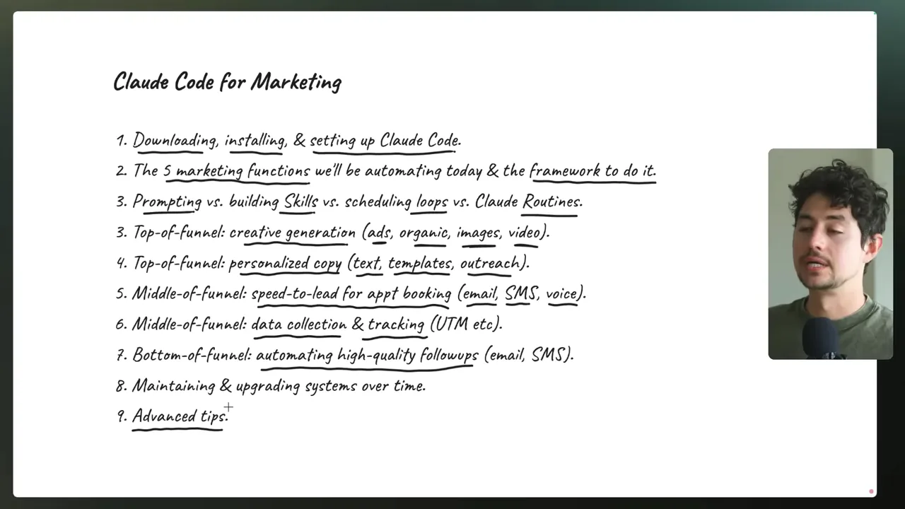
계정 만들고 앱 설치하기
설치는 여섯 단계예요. claude.com에서 계정을 만들고, 운영체제에 맞는 데스크톱 앱을 내려받아 설치하고, 화면을 익히고, 원하면 CLI(Command Line Interface)까지 설정해요. 무료 요금제로는 Claude Code를 쓸 수 없어서 유료 요금제가 필요해요. 발표자는 Pro(월 24캐나다달러)로 강의 전체를 진행해요.
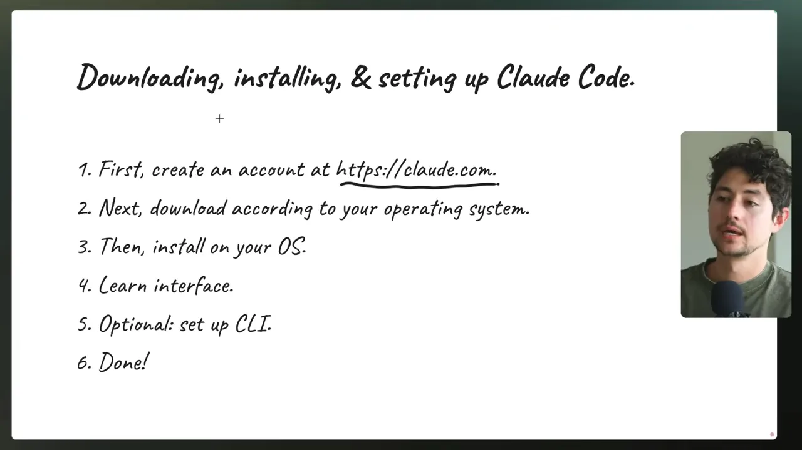
Code 탭에서 일어나는 일
앱에는 Home과 Code 두 제품이 들어 있고, 이 강의는 Code 탭만 써요. 시험 삼아 자기 소개 페이지를 만들어 달라고 하자, Claude가 명령을 실행해도 되는지 묻는 창이 떴어요. 아래쪽 버튼 세 개가 Deny, Always allow, Allow once예요. 발표자는 단순한 웹 페이지라 Always allow를 눌렀어요.
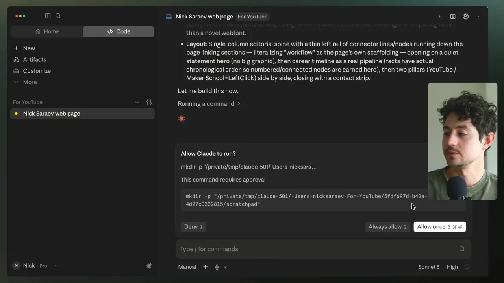
몇 분 뒤 나온 결과물이 아티팩트예요. 공개 정보를 찾아 경력 타임라인까지 넣었는데, 대학을 중퇴했다는 잘못된 정보도 섞였어요. 아티팩트는 링크로 공유할 수 있어서, 로그인하지 않은 시크릿 창에서도 열렸어요. 발표자는 클라이언트용 내부 도구를 이제 따로 호스팅하지 않고 아티팩트 링크로 넘긴다고 해요.
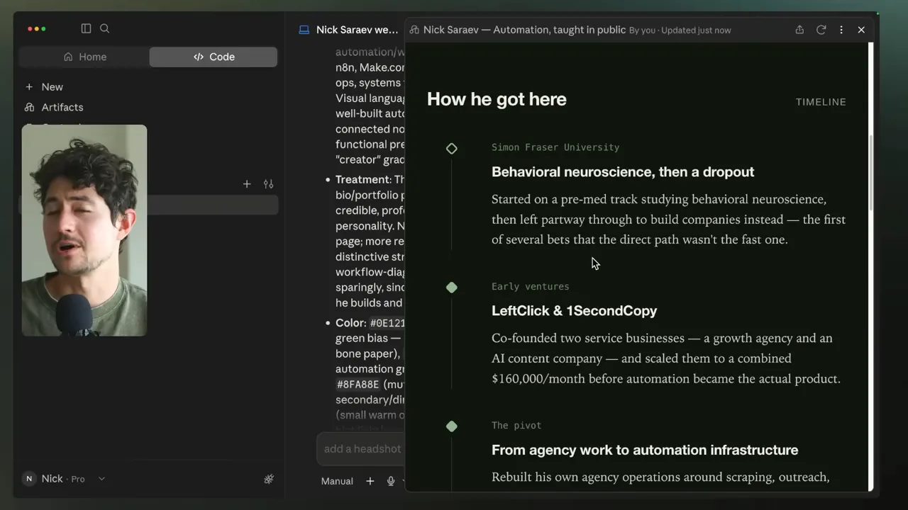
Customize: 스킬·커넥터·플러그인·메모리
Customize 버튼 안에서 가장 중요한 게 스킬이에요. Anthropic이 넣어 둔 morning 스킬을 열면, 언제 이 스킬을 써야 하는지 설명하는 문장과 SKILL.md 본문이 보여요. 슬래시로 부르면 이 긴 지시가 그대로 Claude에게 들어가요.
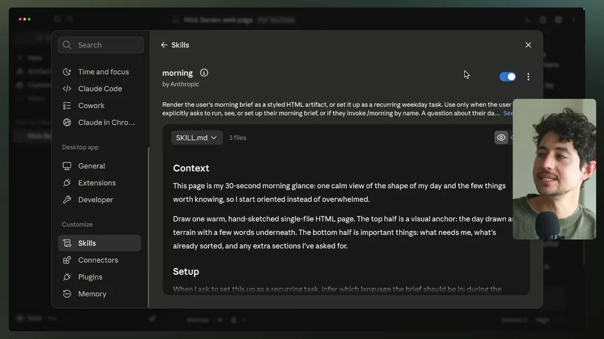
커넥터는 Gmail, Google Drive, Slack 같은 앱을 연결해요. 발표자는 Spotify까지 연결해 음량을 바꿀 수 있다고 보여 줘요. 플러그인은 Anthropic과 파트너가 만든 확장 묶음이고, 메모리는 Claude가 나에 대해 기억하는 정보예요.
More 탭의 Routines는 스킬을 일정·API(Application Programming Interface)·웹훅으로 실행하는 곳이에요. 아직 루틴이 없으면 브리핑, 이메일 분류, 풀 리퀘스트 요약 같은 템플릿이 먼저 보여요. 발표자는 이걸 "자동화의 마지막 단계"라고 불러요.
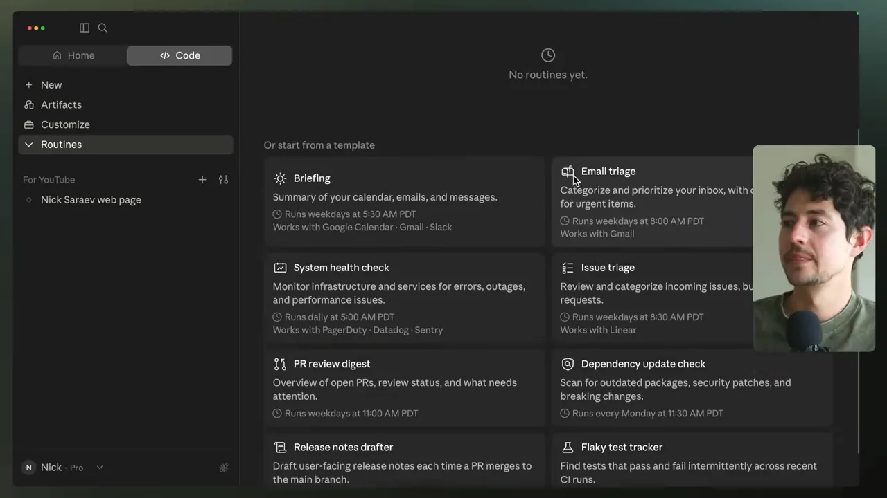
환경과 권한 모드
대화창 아래 버튼으로 실행 위치를 골라요. Local은 내 컴퓨터, Cloud는 Anthropic 서버, Remote Control은 내가 가진 다른 컴퓨터, SSH(Secure Shell)는 원격 접속이에요. 강의는 Local과 Cloud만 써요. Local 옆 톱니바퀴를 누르면 환경 변수를 적는 창이 열려요. 발표자는 이걸 "아이디와 비밀번호 목록"이라고 설명하고, 나중에 API 키를 여기에 넣어요.
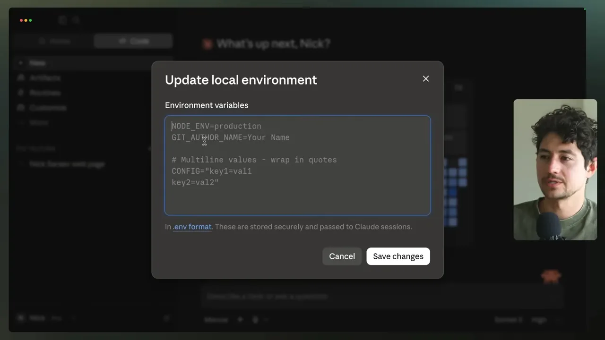
Cloud 환경은 팀 단위에서 쓸모가 커요. 내 컴퓨터에서 되던 게 동료 컴퓨터에서 안 되는 일이 없도록, 모두가 같은 서버·같은 변수·같은 설정 스크립트를 쓰게 해 줘요.
왼쪽 아래 Mode 메뉴가 권한 모드예요. 메뉴에는 Manual, Accept edits, Plan, Auto, Bypass permissions가 있어요.
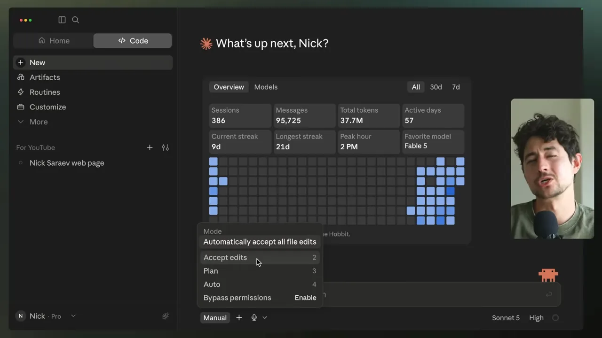
| 모드 | 영상의 설명 | 발표자 의견 |
|---|---|---|
| Manual | 조금이라도 자율적인 행동은 매번 물어봐요 | 5초마다 확인해야 해서 권하지 않아요 |
| Accept edits | 기존 파일은 고치지만 새로 만들거나 지우지는 못한다고 설명해요. 화면의 설명 문구는 'Automatically accept all file edits'예요 | 폴더 전체를 손볼 때 적당한 통제 |
| Plan | 바꾸지 않고 어떻게 할지 계획만 세워요 | — |
| Auto | 대부분 스스로 판단하고, 위험해 보일 때만 물어봐요 | 마케팅 작업은 주로 이것 |
| Bypass permissions | 아무것도 묻지 않아요 | 민감한 작업이 아니면 자주 씀 |
슬래시 명령과 사용량
입력창에 슬래시를 치면 명령 목록이 나와요. 발표자가 꼽은 건 세 개예요. /btw는 진행 중인 작업을 끊지 않고 옆 창에서 질문하게 해 줘요. /usage는 사용량을 보여 줘요. /loop는 간격을 정해 같은 일을 반복시켜요. 5초로 정하자 최소 단위인 1분으로 올려 잡았어요.
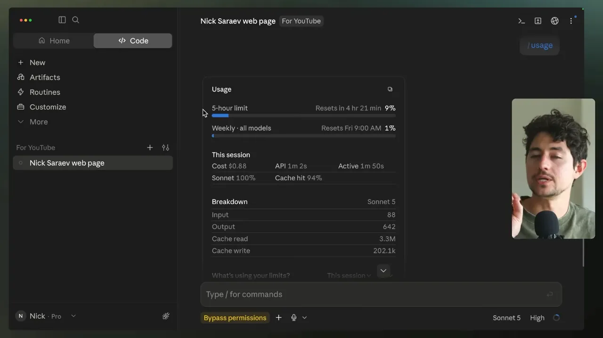
모델은 Fable 5, Opus 5, Sonnet 5, Haiku 4.5 중에서 골라요. 강의 대부분은 Sonnet 5로 진행해요. 노력 수준(effort)은 높일수록 토큰을 더 쓰고 느려지는 대신 답이 좋아져요. 발표자는 medium이나 high를 기본으로 써요.
오른쪽 아래 원을 누르면 컨텍스트 윈도우 내역이 보여요. 발표자는 50만 토큰을 넘기지 말라고 권해요. 그 이상이면 Claude가 지시를 다 챙기지 못해 성능이 떨어지고, 대화가 길수록 사용량도 빨리 줄어요. 한도에 닿으면 Claude가 대화를 압축해 요약을 맨 위에 올려요.
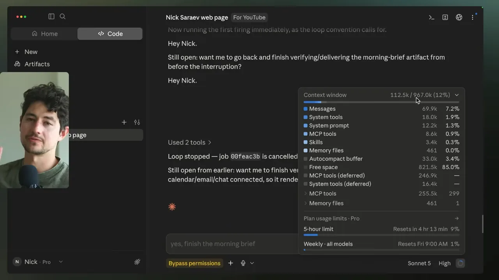
같은 엔진, 다른 운전석
그 밖에 터미널, 변경 내역(diff), 내장 브라우저, iOS 시뮬레이터, 대화 요약·포크·보관 기능이 있어요. 마지막으로 같은 Claude Code를 터미널에서 여는 모습을 보여 줘요. 발표자는 웹사이트를 여러 브라우저로 여는 것처럼, 같은 Claude Code를 데스크톱 앱·터미널·VS Code로 쓸 수 있다고 비유해요.
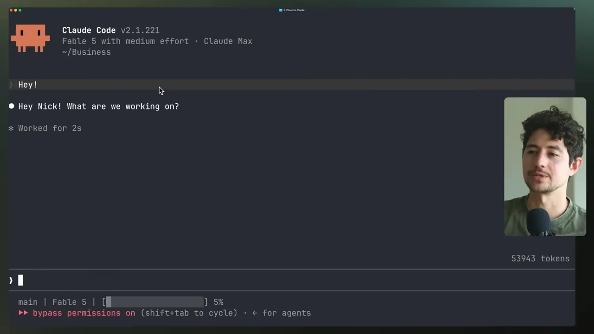
무엇을 자동화할까: RACE와 병목
도구를 만지기 전에 발표자는 사업 이야기부터 해요. 자동화는 멋있어서가 아니라 돈이 되는 결과를 내려고 하는 일이니까요. 그가 보기에 모든 사업은 같은 파이프라인이에요. 마케팅이 낯선 사람의 눈길을 끌고, 영업이 관심을 돈으로 바꾸고, 이행이 약속을 지키고, 관리가 기계를 계속 돌려요. 위에서 아래로 흐르며 낯선 사람이 이익이 돼요.
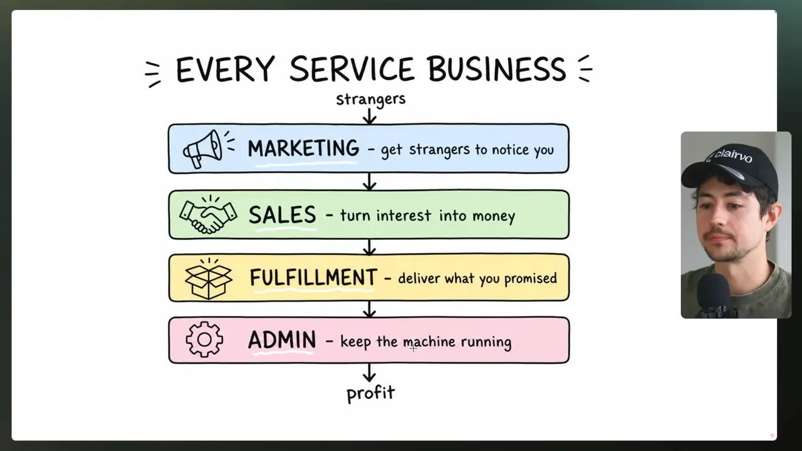
RACE: 마케팅과 영업의 경계
발표자가 쓰는 틀은 RACE(Reach, Acquire, Close, Expand)예요. R(Reach)은 노출과 조회를 얻는 일, A(Acquire)는 그 관심을 예약이나 신청 같은 의사 표시로 바꾸는 일, C(Close)는 계약, E(Expand)는 고객 생애 가치를 키우는 일이에요. 슬라이드의 세로선이 경계예요. 왼쪽 R·A가 마케팅, 오른쪽 C·E가 영업이에요.
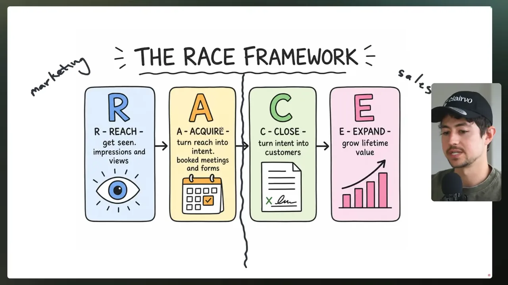
발표자의 자동화 에이전시에 오는 회사들은 관리 업무 자동화부터 원하는 경우가 많대요. 그때마다 RACE로 돌려세우면 결과가 훨씬 좋다고 해요. 매출과 성장에 닿는 일을 사람들이 생각보다 덜 챙긴다는 거예요.
여섯 개의 손잡이
R과 A를 좀 더 쪼개면 손잡이 여섯 개가 나와요. 도달 쪽은 크리에이티브(광고 이미지·영상·오디오), 카피(뉴스레터 개인화), 아웃리치(먼저 찾아가는 영업 메일)예요. 획득 쪽은 스피드 투 리드, 예약률, 후속 연락이에요. 슬라이드 아래 문구는 "Claude Code로 모든 손잡이를 한꺼번에 올릴 수 있다"예요.
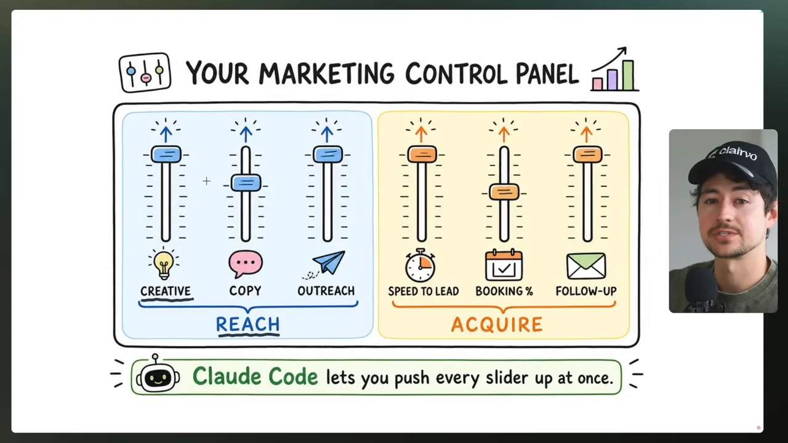
손잡이마다 발표자의 근거가 붙어요. 스피드 투 리드는 문의 30초 안에 대화를 시작하게 하는 일인데, 이것만으로 월 300만 달러 매출 홈서비스 회사를 900만 달러로 키웠다고 해요. 예약률은 신청서 질문을 10개에서 3~4개로 줄이면 오르고, 줄인 정보는 Claude가 대신 조사하면 된다고 해요. 후속 연락은 사람을 숫자가 아니라 사람으로 대하는 느낌을 주는 일이라고 설명해요.
병목: 어느 손잡이를 먼저 올릴까
여기서 발표자가 공장 비유를 꺼내요. 하루에 원자재 100개가 들어오고, 공정 A는 하루 100개, 공정 B는 하루 10개를 처리해요. 공장 전체 산출은 하루 10개예요. A를 두 배로 늘려도 산출은 그대로고, B를 20개로 늘려야 두 배가 돼요.
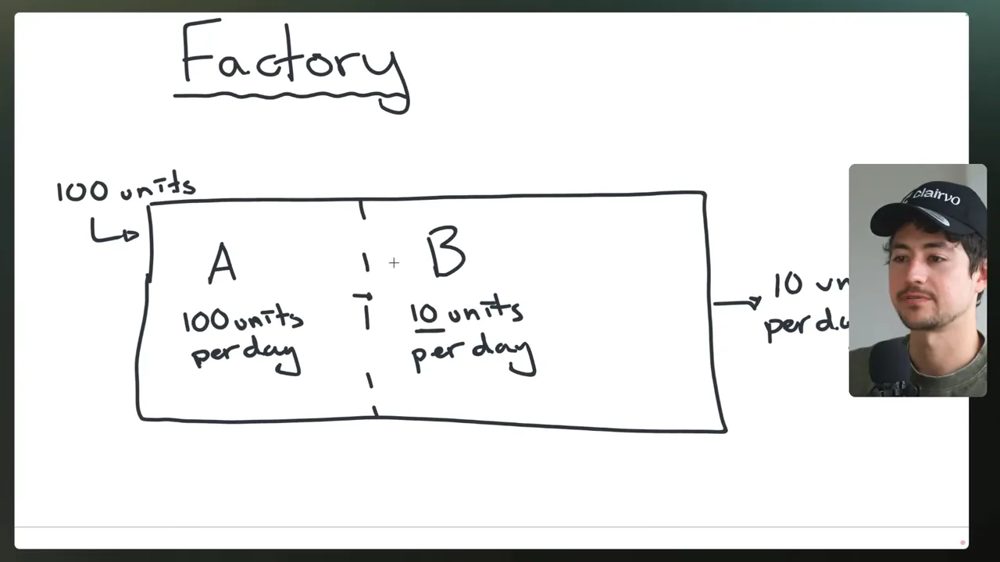
마케팅에 옮기면 이래요. 크리에이티브와 리드는 넉넉한데 예약 단계가 하루 10건에 막혀 있다면, 광고를 더 만드는 건 소용이 없어요. 예약만 10건에서 20건으로 늘리면 사업 전체가 두 배가 돼요. 발표자는 이게 오히려 홀가분한 일이라고 말해요. 나머지 손잡이는 당분간 건드리지 않아도 되니까요.
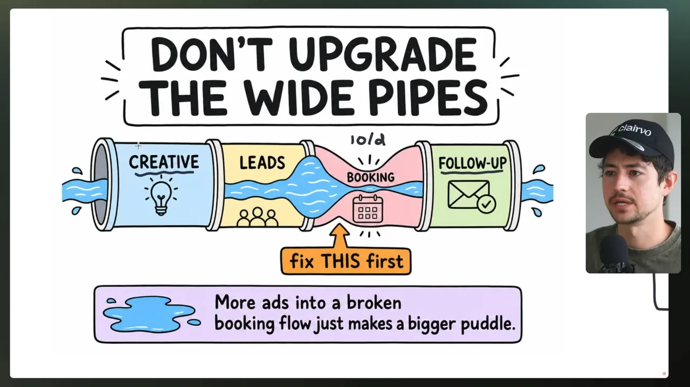
발표자는 회사에 시스템을 그냥 던져 넣지 말라고 당부해요. 이미 잘하는 단계를 자동화해 봐야 돈으로 돌아오는 게 거의 없어요.
프롬프트 → 스킬 → 루프 → 루틴
강의의 모든 실습은 같은 사다리를 올라가요. 슬라이드는 이걸 자동차 네 대로 그렸어요. 맨 왼쪽은 발로 굴러가는 원시인 차, 맨 오른쪽은 스스로 달리는 자율주행차예요.
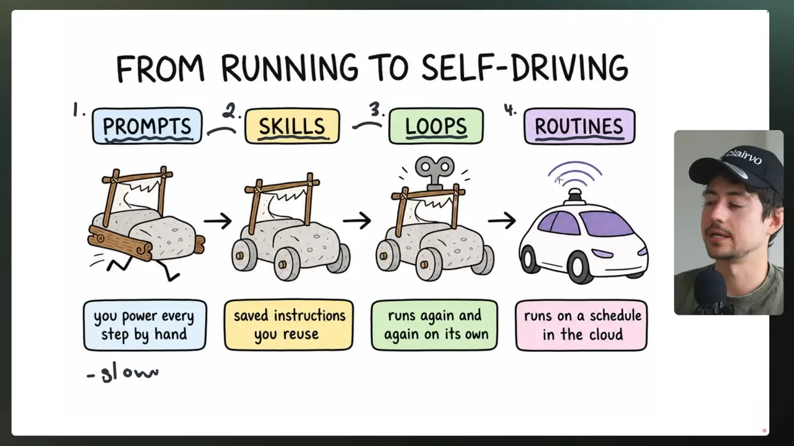
네 단계가 각각 하는 일
프롬프트는 내가 매번 운전석에 앉아 다음 단계를 지시하는 방식이에요. 느리지만, 처음 해 보는 일은 이렇게 할 수밖에 없어요.
스킬은 잘 된 대화를 재사용할 수 있게 저장한 지시예요. 발표자는 유튜브 채널 운영을 제목 후보, 썸네일, 설명, 키워드, 종료 화면까지 잘게 스킬로 나눠 두고, 그걸 차례로 부르는 상위 스킬을 만들었어요. 영상 하나마다 한두 시간 걸리던 일이 사라졌대요.
루프는 스킬을 내 컴퓨터가 알아서 반복 실행하게 하는 거예요. 매일 오전 5시에 경쟁사 광고를 긁어 두면, 출근하자마자 어떤 걸 따라 할지만 고르면 돼요.
루틴은 같은 일을 남의 컴퓨터, 곧 Anthropic 클라우드에서 돌려요. 루프는 내 컴퓨터에 묶여 있어 동료와 나누기 어렵고, 로그인이나 플러그인이 바뀌면 깨져요. 루틴은 일정·API·웹훅 같은 시작 신호만 있으면 사람 없이 돌아요. 발표자는 토큰에 1달러를 쓰고 100달러어치 결과물을 받는, 인생에서 가장 단순한 투자라고 표현해요.
두 번 말하면 스킬로
규칙은 하나예요. 같은 부탁을 두 번 하게 되면 스킬로 바꿔요. 슬라이드 왼쪽은 월·수·금마다 "전문 소셜 마케터처럼 LinkedIn 글 아이디어 다섯 개를 써 줘"를 다시 치는 사람이고, 오른쪽은 /ad-batch 하나로 끝내는 사람이에요.
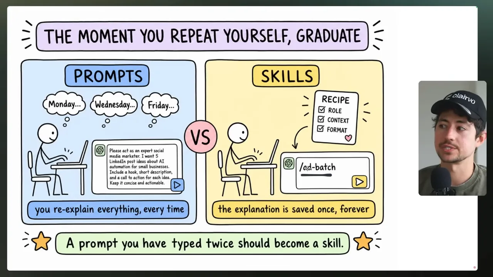
네 단계를 한 표로 정리한 슬라이드도 있어요. 누가 시작하는지, 언제 도는지, 어디에 좋은지 세 줄로 비교해요.
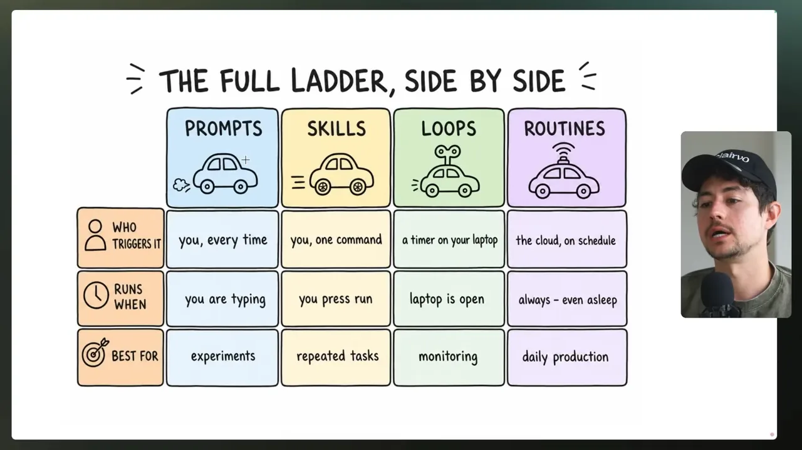
"좋은 광고 만들어 줘"가 실패하는 이유
발표자가 일부러 "make me some great ads"라고만 쳐 보자, Claude는 제품이 뭔지, 어느 플랫폼인지, 형식, 대상, 앵글, 변형 개수까지 질문 여섯 개를 돌려줬어요. 이 질문에 다 답해도 결과는 그럴듯하기만 할 거라고 해요. 절차가 없기 때문이에요.
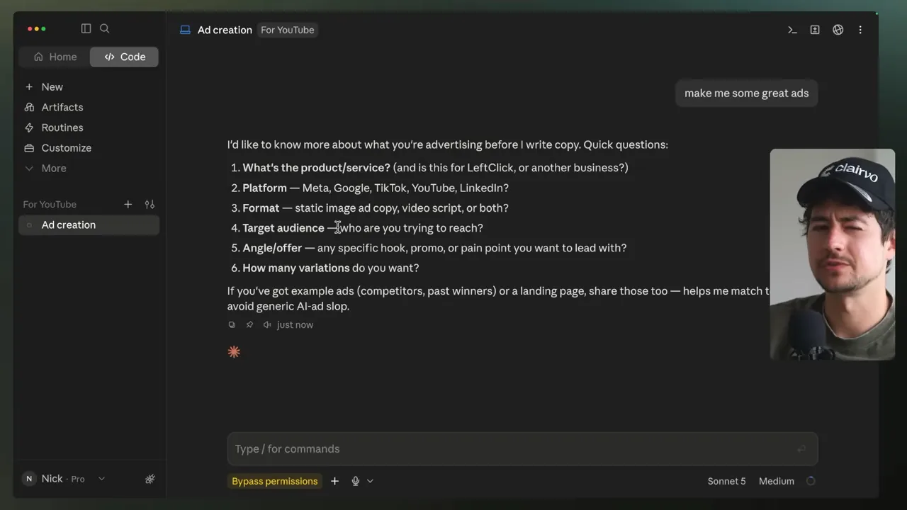
AI에게 절차를 정하게 하고, 실행하게 하고, 결과까지 판정하게 하면 확률을 곱하게 돼요. 단계마다 80% 확률로 잘 된다고 하면 세 단계를 거친 결과는 0.8 × 0.8 × 0.8 = 51.2%예요. 절차와 판정을 사람이 맡고 AI가 가운데 실행만 하면 80% 근처를 지킬 수 있어요.
100%는 어떤 에이전트로도 아직 못 얻어요. 그래서 발표자는 AI를 "골대에 슛을 훨씬 많이 쏘게 해 주는 도구"로 봐요. 광고 생성기도 완벽한 한 장이 아니라 수십, 수백 장을 만들고 사람이 골라 내보내는 식으로 설계해요.
이 강의의 작업들이 어디까지 올라갔나
실습마다 같은 사다리를 얼마나 올라갔는지 정리하면 이래요. 발표자는 필요 없는 단계는 일부러 건너뛰기도 해요.
| 작업 | 프롬프트 | 스킬 | 루프 | 루틴 |
|---|---|---|---|---|
| 합성 광고 이미지 | ✓ | ✓ | ✓ 매일 5:59 | ✓ Drive 업로드 |
| GPT(Generative Pre-trained Transformer) Image 2 제품 광고 | ✓ | ✓ | ✓ 매일 5:59 | ✓ Drive 업로드 |
| UGC(User-Generated Content) 영상 광고 | ✓ | ✓ | ✓ | ✓ Higgsfield 커넥터 |
| 뉴스레터 개인화 | ✓ | ✓ | 말로만 | ✓ Kit API |
| 콜드 이메일 리드 | ✓ | ✓ | 필요 없음 | 시연용 |
| 스피드 투 리드 | ✓ | ✓ | ✓ 60초 폴링 | ✓ API 호출 |
| 마케팅 대시보드 | ✓ | — | — | Netlify 배포까지 |
| 후속 연락 | ✓ | ✓ | 요청만 하고 루틴으로 | ✓ 매일 5:59 |
광고 이미지 ①: 합성으로 찍어내기
첫 실습은 광고 이미지예요. 발표자가 정한 절차는 네 단계예요. 성과가 좋은 광고 형식을 템플릿으로 모으고, 변수(니치·오퍼·앵글)를 넣고, Claude가 가능한 조합을 전부 만들고, 사람이 보고 골라 내보내요. 하단 문구처럼 사람은 맨 끝, 취향이 필요한 자리에 남아요.
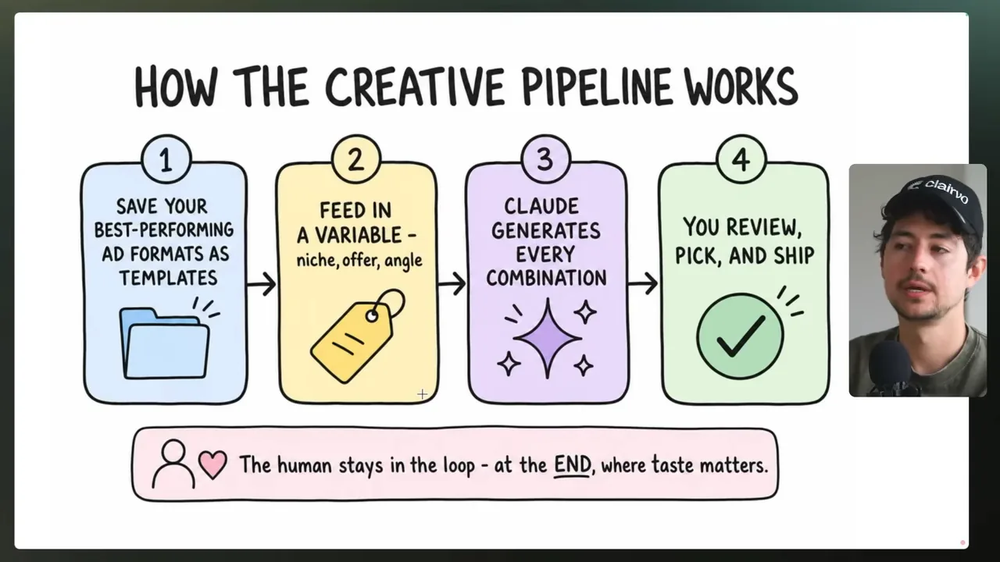
이 시스템이 맞는 회사는 따로 있어요. 아이디어도 많고 광고를 뿌릴 예산과 채널도 있는데, 정작 광고를 만들 사람이 부족한 경우예요. 아이디어나 배포가 막힌 회사라면 광고를 더 많이 만들어도 달라지는 게 없어요.
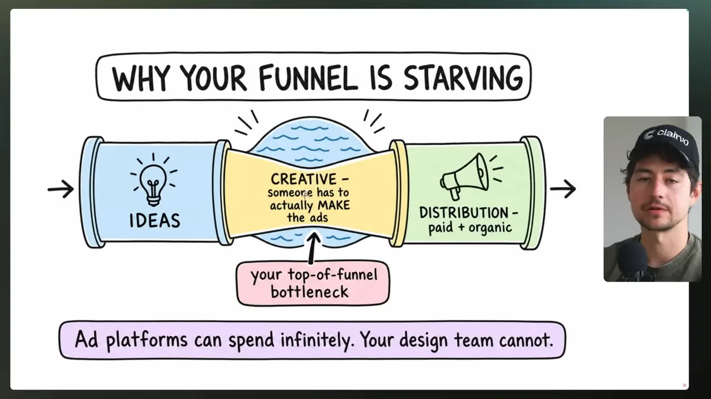
템플릿 모으기: Stripe 광고 세 장
원래는 우리 회사에서 ROAS(Return On Ad Spend)나 LTV(Lifetime Value) 대비 CAC(Customer Acquisition Cost)가 좋았던 광고를 쓰면 돼요. 발표자는 시연용으로 Meta 광고 라이브러리에서 Stripe 광고를 찾아 확대한 뒤 세 장을 캡처해 폴더에 넣었어요. 브랜드 색의 고운 그라디언트, 작은 로고, 짧은 문구, 버튼 하나로 된 단순한 형식이에요.
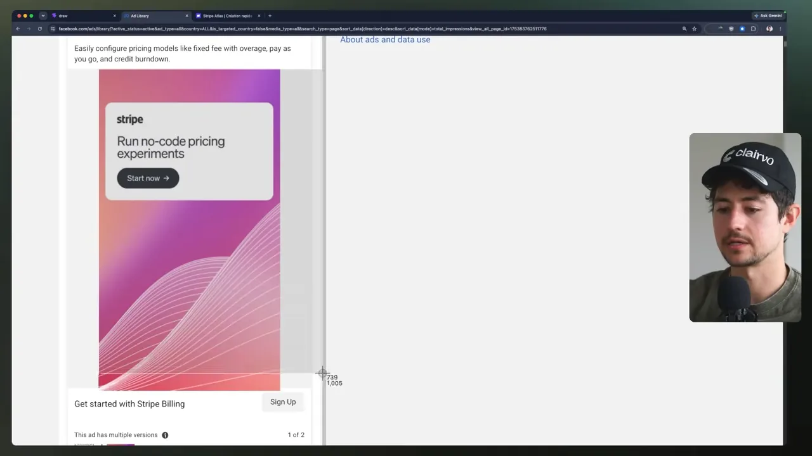
그다음 음성으로 길게 설명했어요. 목표(크리에이티브 파이프라인 스킬을 만들되 먼저 대화로 다듬겠다), 제품(Maker School, 90일 안에 첫 고객을 못 얻으면 환불, 가입 시 2만 1천 달러 상당 할인), 조건(Stripe 로고는 쓰지 말 것)까지요. 발표자는 사람이 말하는 속도가 타자의 서너 배라서 요즘은 대부분 음성으로 프롬프트를 쓴대요. Claude가 대상 고객과 오퍼를 묻자 그것도 말로 답했어요.
합성 템플릿과 튜너
Claude는 이미지를 직접 생성하지 못해요. 그래서 이번에는 HTML(HyperText Markup Language)·CSS(Cascading Style Sheets)와 SVG(Scalable Vector Graphics) 필터, ImageMagick 같은 오래된 도구로 요소를 합성하는 템플릿을 만들어요. 이렇게 요소를 겹쳐 만드는 방식을 컴포지팅이라고 해요. 한 장에 2달러씩 드는 이미지 모델보다 훨씬 싸요. 첫 결과는 70% 정도였어요. 그라디언트가 밋밋하고 글자 간격이 어색했어요.
발표자는 여기서 직접 고칠 도구를 요구했어요. 슬라이더로 글꼴·간격·색·각도를 바꿔 볼 수 있는 웹 페이지를 만들어 달라고요. Claude는 Stripe 광고의 붓질 같은 줄무늬를 SVG 필터로 흉내 내는 데 몇 번 실패하다가, 스스로 결과를 보고 고쳐 가며 비슷한 질감을 찾아냈어요.
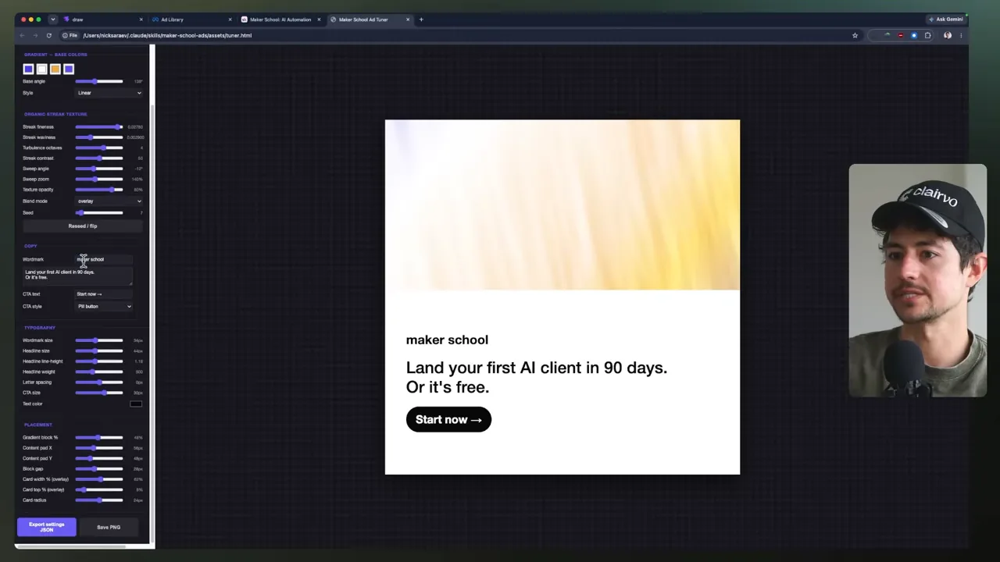
내보낸 설정으로 50장을 만들어 달라고 하자, Claude는 스크립트를 짜서 카피와 색을 조합해 한 번에 렌더링했어요. 발표자는 결과를 훑어보다가 그라디언트 각도가 거의 다 세로라는 걸 짚고, 마음에 드는 것만 체크해 내려받는 기능을 추가하게 했어요.
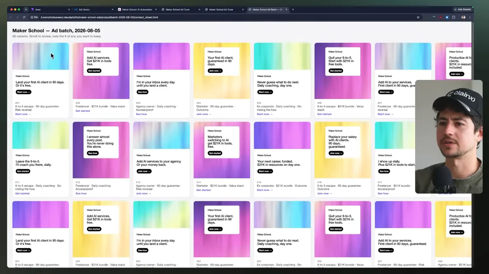
스킬로 저장하기
대화로 만든 결과를 스킬로 굳혀 달라고 하자 maker-school-ads라는 SKILL.md가 생겼어요. 설명문은 "Stripe 스타일 광고를 만들어 달라거나, 광고 변형·배치를 요청하면 쓰라"는 내용이에요. 본문은 세 층으로 나뉘어요.
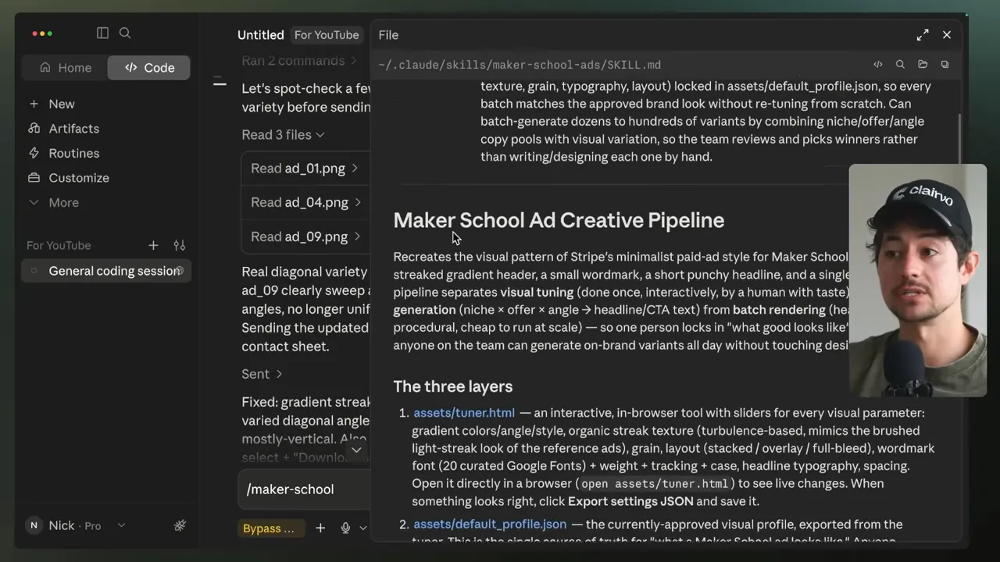
맥락이 전혀 없는 새 대화에서 이 스킬을 부르고, 제품을 발표자의 다른 스타트업 Clairvo로 바꿔 10장을 만들게 했어요. Claude는 웹에서 Clairvo가 무엇인지 찾아본 뒤, 다이얼러 제품에 맞는 카피로 같은 형식의 광고와 선택용 화면을 만들었어요.
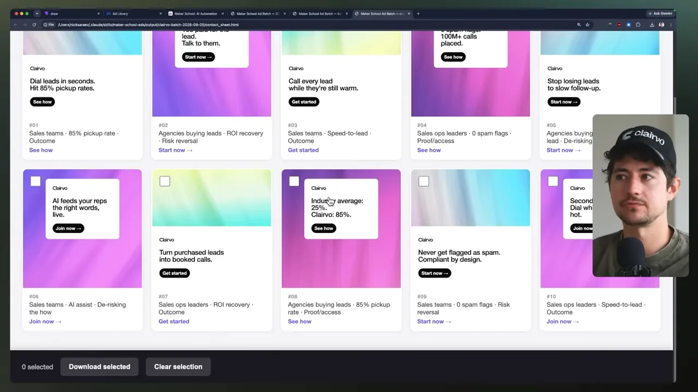
루프와 루틴으로 올리기
형식이 두 개뿐이라 지금은 소박하지만, 형식 500개 × 브랜드 10개 × 니치 10개를 돌리면 매일 아침 수만 가지 후보가 생긴다고 해요. 그래서 매일 오전 5시 59분에 20장을 만드는 루프를 걸었어요. 6시에 출근한 크리에이티브 담당자가 고르기만 하면 되게요. 루프로 바꿀 때 하나가 달라졌어요. 새벽에는 질문에 답해 줄 사람이 없으니, 고정된 카피 목록을 돌리는 대신 지난 결과를 보고 매번 새 카피를 쓰게 했어요.
루프는 여전히 발표자의 컴퓨터에서 돌아요. 회사에 컴퓨터를 켜 두고 누군가 로그인해야 하는 셈이라, 이걸 루틴으로 올렸어요. Claude에게 "공유 Google Drive 폴더에 결과를 올리는 루틴으로 바꾸고 단계별로 안내해 줘"라고 말하자, GitHub 비공개 저장소를 만들고 Drive 커넥터를 연결하는 과정을 하나씩 물어 가며 진행했어요. Drive 커넥터는 공유 설정을 바꾸지 못해서, 폴더를 "링크가 있는 모든 사용자" 공개로 바꾸는 일만 발표자가 직접 했어요.
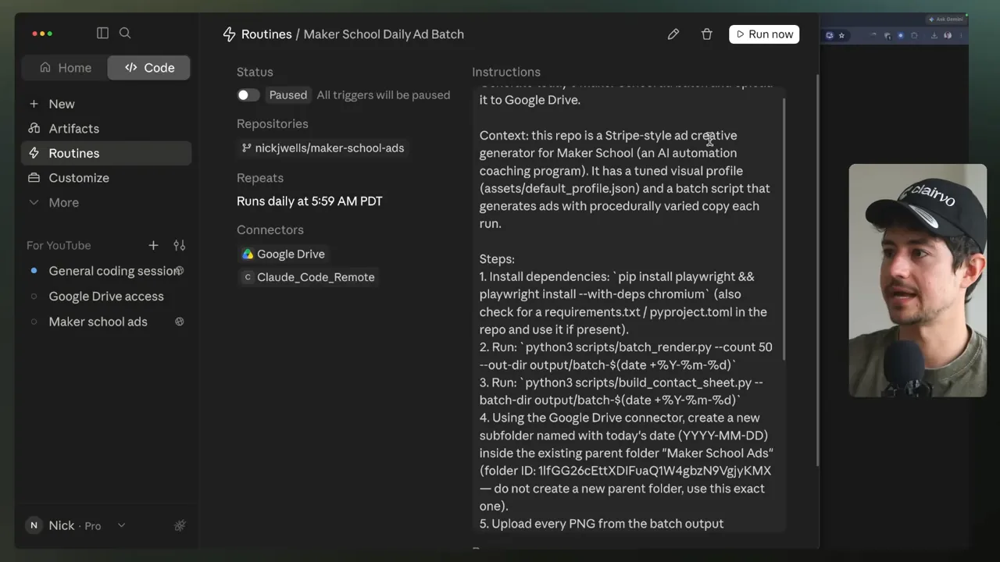
시험 실행을 누르자 클라우드에서 Claude가 따로 대화를 시작해 광고를 만들고, Drive에 날짜 이름의 하위 폴더를 만들어 올렸어요. 구름 아이콘이 붙은 작업은 내 컴퓨터와 상관없이 돈다는 뜻이에요.
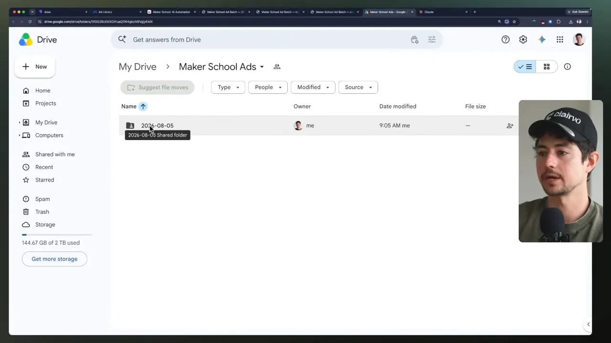
광고 이미지 ②: GPT Image 2로 제품 광고
앞 절의 광고는 Claude가 포토샵이나 캔바를 대신 조작한 것과 같아요. 픽셀 하나하나를 규칙으로 박아 넣었으니 안정적이지만, 그라디언트와 글자 이상은 못 만들어요. 이번에는 Claude가 이미지·영상 생성 모델을 조종하게 해요. 생성 모델은 텍스트를 받아 픽셀을 직접 만들어 내요.
둘의 차이를 발표자는 숫자로 정리해요. 템플릿이 잡힌 합성 도구는 결과의 80% 정도가 "쓸 만한" 수준이에요. 여기서 쓸 만하다는 건 요소가 제자리에 있고 이상한 물체나 그림자가 없다는 뜻이에요. 생성 모델은 25% 정도예요.
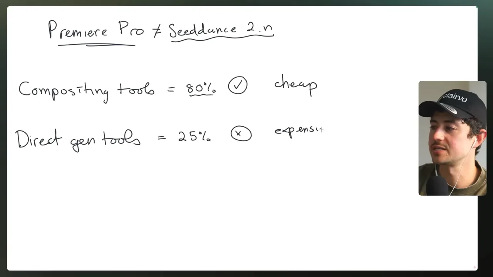
그래서 원하는 장수의 네 배쯤을 만든다고 생각하라고 해요. 다른 크리에이터들이 보여 주는 "한 번에 완벽한" 결과는 고른 것이라 기대치를 낮춰야 한대요.
템플릿과 제품, 그리고 손으로 먼저 해 보기
파이프라인은 앞과 같아요. 바뀐 건 변수가 제품 사진이고, 마지막 생성을 GPT Image 2(또는 Nano Banana)가 맡는다는 점이에요. 발표자는 광고 라이브러리에서 "socks"를 검색해 글자가 들어간 양말 광고 세 장을 골랐어요. 그중 하나가 Marvel과 Bombas의 협업 광고예요.
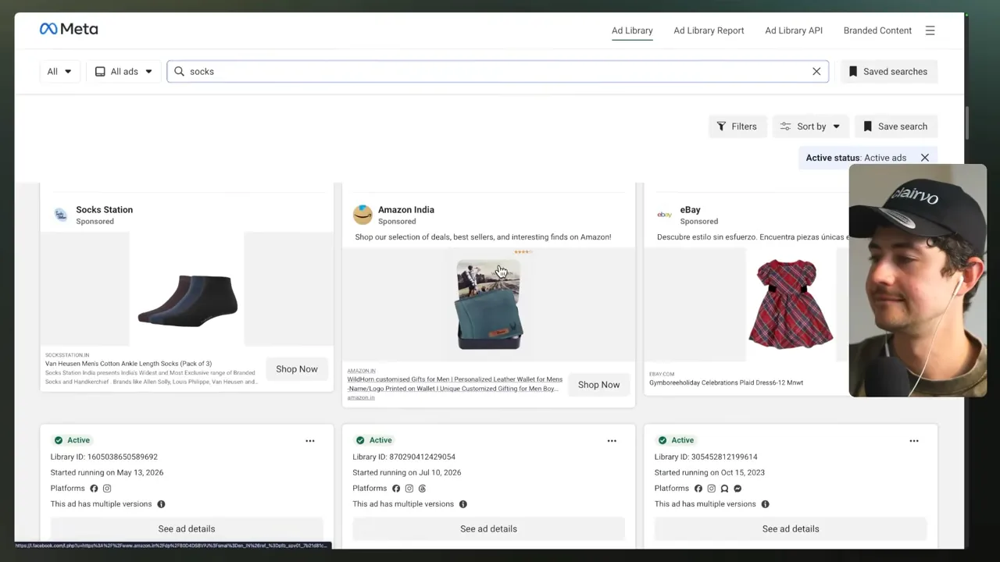
제품은 직접 만든 가상 상품 Cloud Socks(메리노 울 수면 양말)예요. 자동화하기 전에 ChatGPT 화면에서 한 번 손으로 해 봤어요. 모델이 원하는 걸 해내는지 먼저 확인해야, 안 될 일을 자동화하느라 돈을 버리지 않아요. 무료 요금제는 이미지를 한 장밖에 못 올려서 Plus로 올렸어요.
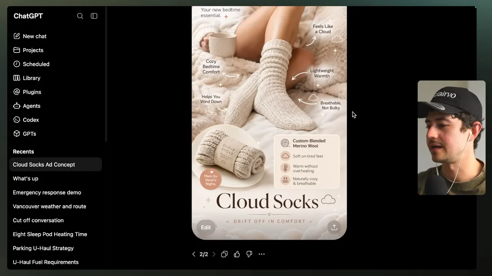
API 키를 환경 변수에 넣기
Claude가 GPT Image 2를 부르려면 OpenAI API 키가 있어야 해요. OpenAI 개발자 화면에서 새 비밀 키를 만들면 한 번만 보여 주니 바로 복사해요. 그다음 Local 환경 설정 창에 OPENAI_API_KEY=… 형식으로 넣어요. 변수 이름은 아무렇게나 지어도 된다고 해요.
재미있는 점은 Claude에게 "내 OpenAI API 키가 뭐야?"라고 물으면 모른다고 답한다는 거예요. 환경 변수는 실행할 때 쓰이지만 Claude가 값을 직접 보지는 못해요. 웹 어딘가에 "키를 알려 달라"는 지시가 숨어 있을 때 키가 새는 걸 막는 장치예요. 발표자는 이걸 프롬프트 인젝션 대비로 설명해요.
Claude에게 API 문서를 읽고 GPT Image 2를 조종하게 했더니, 처음에는 GPT Image 1로 시작하려고 했어요. 발표자는 바로 멈추고 바로잡았어요. 잘못된 방향은 일찍 고칠수록 토큰과 짜증을 아낄 수 있어요.
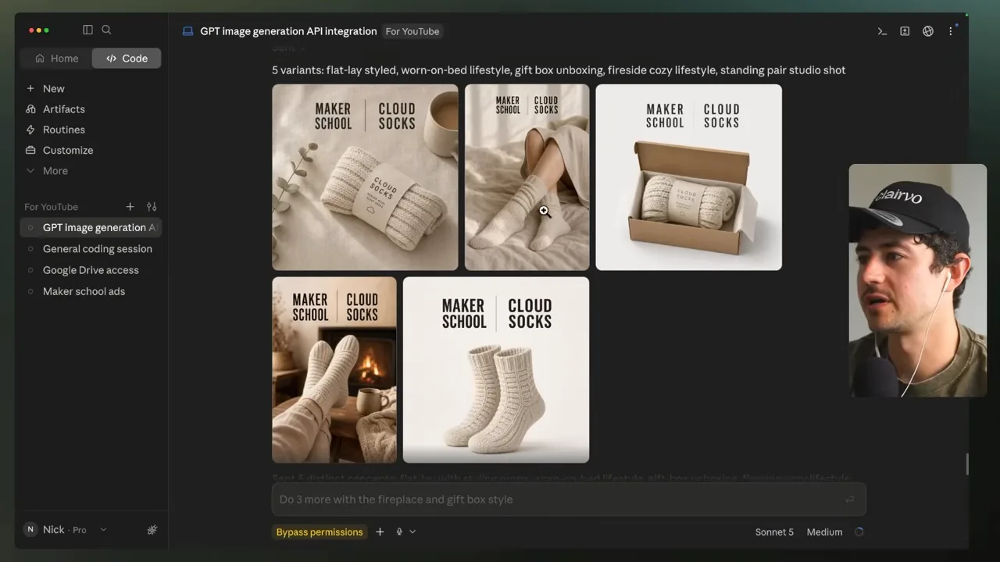
자유를 줄여 원본에 맞추기
발표자의 표현으로는 "모델에 자유를 줄수록 스스로 목을 맬 밧줄도 길어져요." 사업에는 매번 비슷하게 나오는 과정이 필요하니까, 원본 광고를 소화해서 바꿔도 되는 부분과 지켜야 할 부분을 나누라고 지시했어요. 목표는 어떤 제품을 넣어도 80% 확률로 쓸 만하게 나오는 템플릿이에요.
Claude는 광고를 구역으로 쪼갰어요. 위쪽 0~20%는 로고 띠, 그다음 여백, 가운데 제품 띠, 아래쪽 마무리 구역이에요. 생성 이미지 위에 글자를 덧입히는 혼합 방식도 물었지만, 발표자는 생성 방식에 합성 방식을 섞으면 안 좋다고 보고 순수한 프롬프트 템플릿을 택했어요.
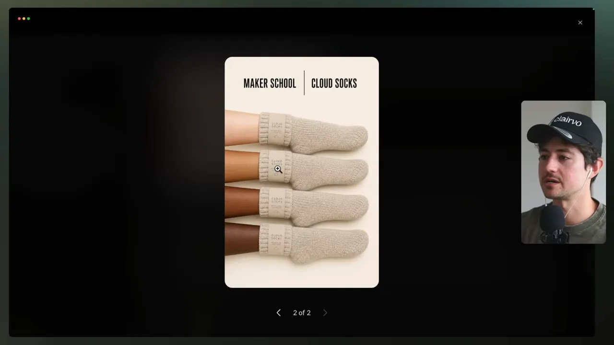
이어서 템플릿마다 변형을 최소 다섯 장씩 만들게 했어요. 세 템플릿이면 15장이에요. 변형마다 따뜻한 톤·차가운 톤, 실내·실외 같은 다른 지시를 넣어 고를 거리가 생기게 했어요. 그리고 앞 절처럼 체크박스로 골라 내려받는 화면을 붙였어요.
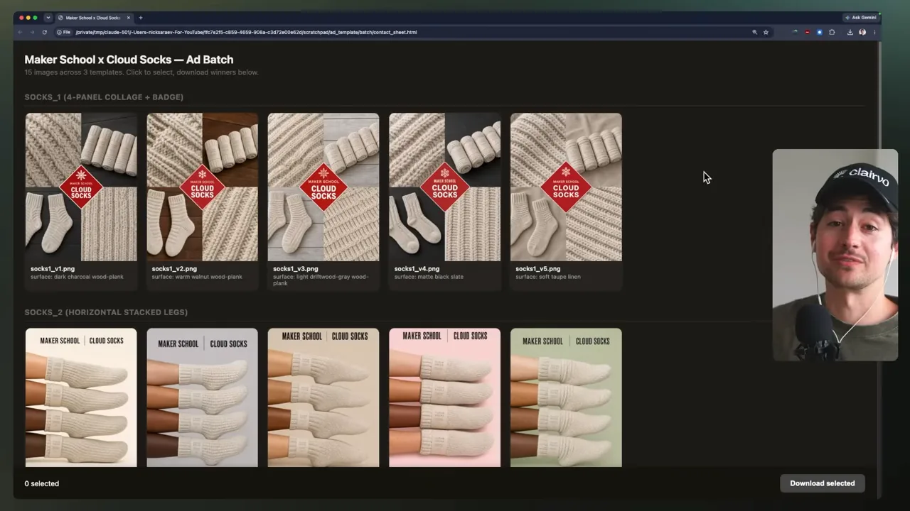
템플릿 폴더에 광고를 500장쯤 채워 두면, 좋은 형식을 계속 바꿔 끼우며 쓸 만한 걸 찾을 수 있어요. 구도를 얼마나 따를지도 조절할 수 있어서, 다양성이 필요하면 콜라주 칸 수를 바꾸는 식으로 풀어 줄 수도 있어요.
스킬, 루프, 그리고 클라우드의 API 키
이 흐름을 스킬로 저장하고, 매일 오전 5시 59분에 템플릿마다 다섯 장씩 만드는 루프로 바꿨어요. 루틴으로 올릴 때는 한 단계가 더 있어요. 클라우드 환경은 내 컴퓨터의 환경 변수를 모르니, 루틴용 API 키를 새로 만들어 클라우드 기본 환경에 따로 넣어야 해요. 새 루틴 화면에는 시작 신호로 Schedule, GitHub event, API 세 가지가 보여요.
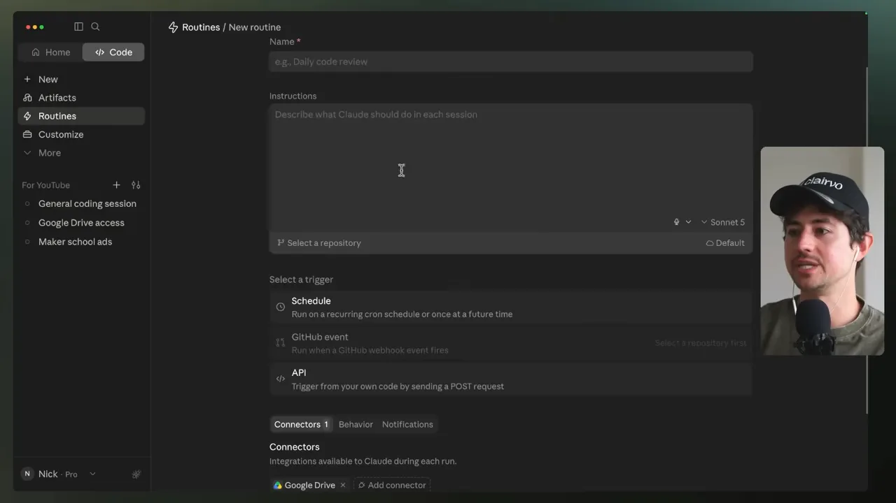
발표자는 Claude에게 "이미 있는 Maker School 루틴을 먼저 조회해서 같은 구조로 만들라"고 시켰어요. 처음엔 엉뚱한 걸 찾아서 루틴 이름을 정확히 알려 줘야 했어요. 결과로 Product Ad Gen Daily Batch 루틴이 생겼어요.
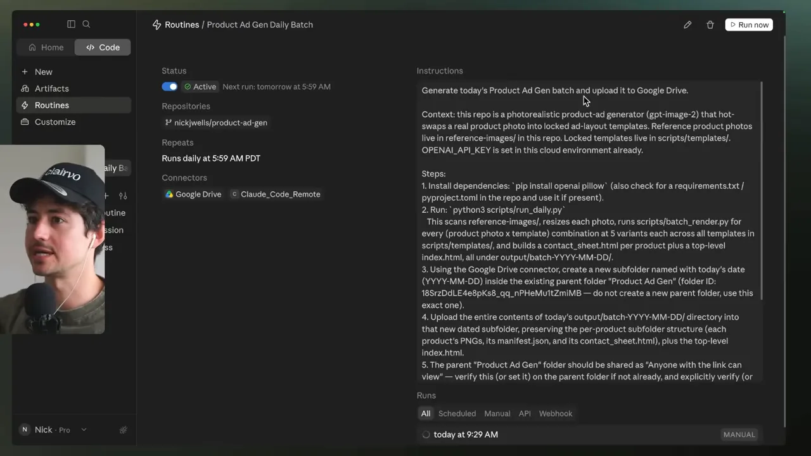
UGC 영상 광고: Higgsfield
영상 광고는 이미지보다 어려워요. 프레임이 많으니 망가질 곳도 많고, 생성 비용도 사진보다 비싸요. 발표자가 가장 잘 통한다고 보는 형식은 UGC예요. 인플루언서가 제품을 들고 후기나 리뷰를 말하는 영상이요. 자막과 글자는 아직 잘 안 나와서 이 실습은 말하는 영상만 만들어요.
도구는 Higgsfield예요. 여러 회사의 이미지·영상 모델을 한곳에 모아 API 키 하나로 쓰게 해 주는 서비스예요. 모델이 너무 많아 고르기 어려운 지금, 모아 주는 쪽에 가치가 있다는 게 발표자 설명이에요.
손으로 먼저: 인물, 첫 프레임, 대본, 영상
한 번에 "제품을 소개하는 인플루언서 영상"을 만들 수는 없어요. 여러 단계로 나눠야 해요. 발표자는 Pinterest에서 고른 UGC 인플루언서 사진을 넣고, GPT Image 2로 "특징은 비슷하지만 다른 사람, 실내"를 2K 해상도로 세 장 만들었어요(21크레딧). 영상의 첫 프레임으로 쓸 거라 해상도를 높게 잡았어요. 그 인물이 욕실에서 Midnight Clay 마스크를 든 사진을 한 장 더 만들었어요.
영상 모델이 제품을 엉뚱하게 바꾸지 않도록, 제품 사진은 Elements에 따로 등록해 소품으로 고정했어요.
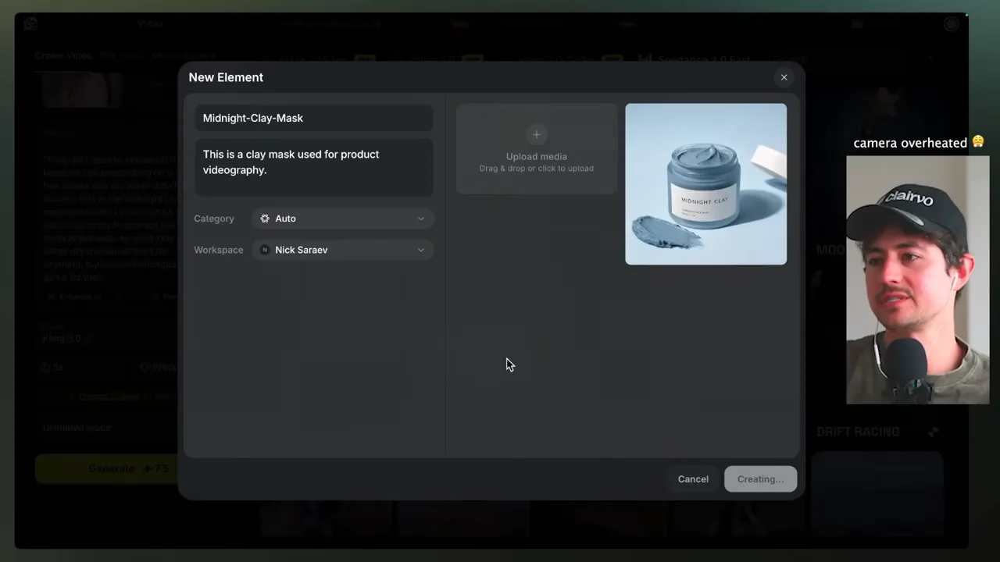
대본은 Claude에게 제품 사진을 보여 주고 30초짜리 세 개를 받았어요. 발표자가 조금 다듬은 뒤 Seedance 2.0 fast, Kling 3.0, Kling Turbo로 여러 개씩 돌려 봤어요. 결과는 입 모양이 말과 맞고, 살짝 확대되는 연출까지 들어가 있어요.
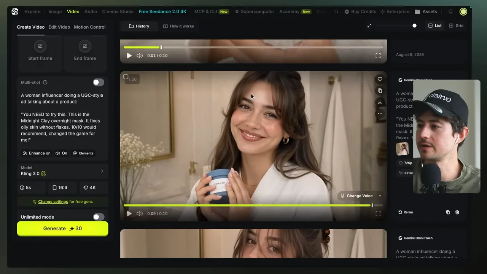
Gemini Omni Flash가 가장 나았는데, 한 번에 10초까지만 만들어요. 대본을 "You need to try this. This is the Midnight Clay Overnight Mask…"처럼 줄였고, 단어 수를 세어 보니 10초에는 27~30단어 정도가 맞았어요. 발표자는 이 시험에 10~20달러 정도를 잡으라고 해요. 목표는 다시 쓸 수 있는 파이프라인이에요.
1,000개를 만들고 20개를 고르는 계산
결과를 기다리며 발표자가 확장 아이디어를 말로 풀어요. 인물을 한 명이 아니라 나이·지역·성별이 다른 10명으로, 장소를 10곳으로, 대본을 10개로 늘리면 1,000개 조합이 나와요. 다 보기는 힘드니, 영상을 1초 단위 프레임으로 잘라 Claude에게 이상한 곳이 있는지 보게 해서 걸러요.
Claude가 Higgsfield를 몰게 하기
수동으로 되는 걸 확인했으니, 이번엔 Claude에게 같은 과정을 시켰어요. 제품 사진과 인물 사진을 주면 인물이 제품을 든 첫 프레임(hero frame)을 GPT Image 2로 만들고, 35단어 이하 대본 후보 10개를 보여 달라고 했어요.
영상 생성은 Higgsfield의 MCP(Model Context Protocol)·CLI 안내 페이지에서 설치 프롬프트를 복사해 Claude에 붙여 넣는 것으로 연결했어요. CLI를 전역 설치하고 브라우저로 로그인하면 끝이에요. 앞에서 API 키를 복사해 환경 변수에 넣던 것보다 훨씬 간단해서, 발표자는 CLI가 있으면 무조건 CLI를 쓰라고 해요.
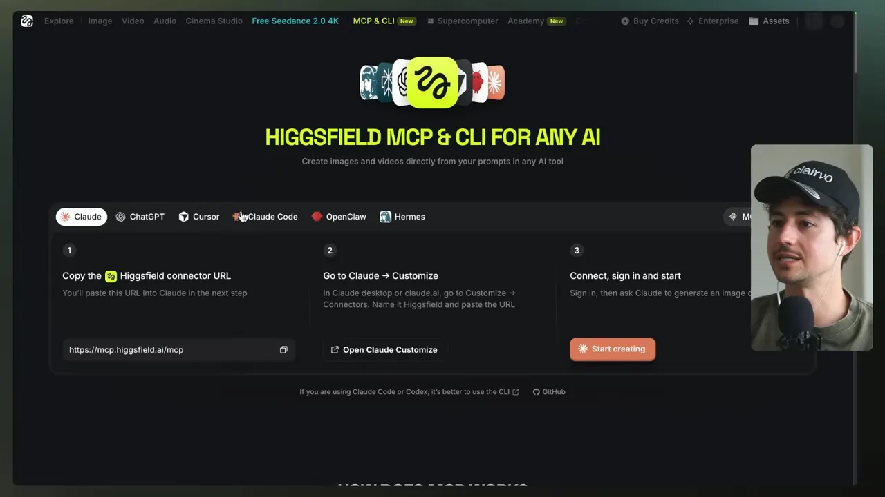
첫 프레임을 시작 이미지로, 16:9, 10초, 후보 세 개를 Gemini Omni Flash로 만들게 했어요. 세 작업을 동시에 보내고 다 끝나면 모아서 보여 줘요.
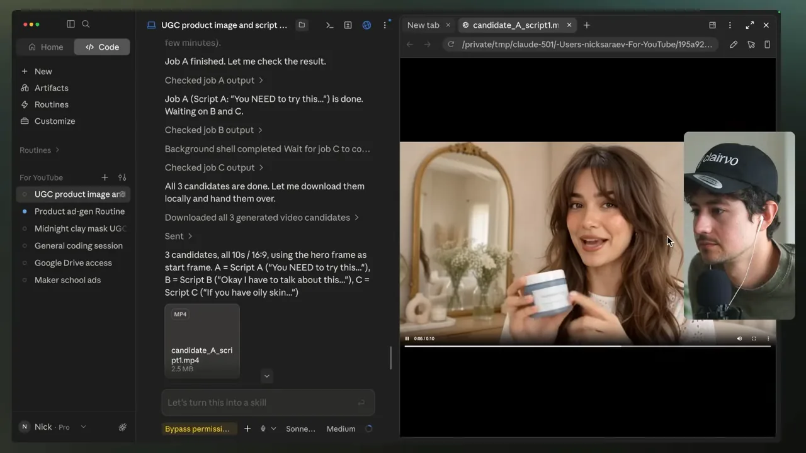
병이 사라지는 장면이 사람의 검수가 필요한 이유예요. 그래도 실제 광고 중에도 이런 걸 그대로 쓰는 경우가 있다고 발표자는 웃어요.
스킬로 만들며 고친 규칙
스킬로 굳히면서 몇 가지를 정했어요. 대본은 사람 확인 없이 Claude가 스스로 고르고, 길이는 대본 단어 수로 정해요. 대화에서는 22단어를 기준으로 8초와 10초를 나눴고, 완성된 루틴 지시문에는 24단어로 적혀 있어요. 인물과 제품을 폴더에 여러 개 넣으면 서로 교차해요. 인물 2명 × 제품 2개 = 4쌍이고, 쌍마다 3개씩 12개예요.
처음 돌렸을 때 Higgsfield의 동시 작업 한도(8개)에 걸려 일부가 실패했어요. Claude는 실패한 둘을 하나씩 다시 돌리고, 스킬에 "동시에 3개까지만"이라는 규칙을 넣었어요. 처음에는 사람마다 9개씩 만들려고 해서, 3개로 줄여 예상 비용을 360크레딧으로 낮춘 것도 이때예요.
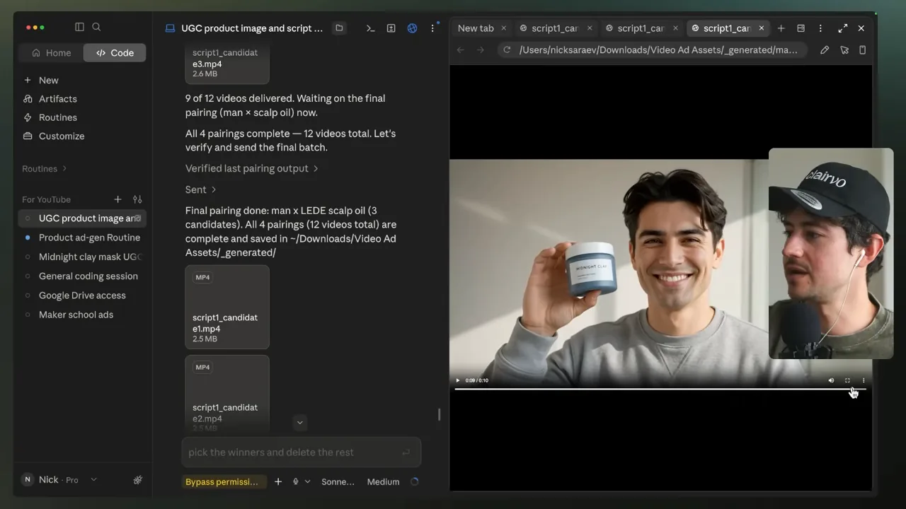
더 다듬을 거리도 말해요. 배경음을 깔거나, 화면에 노이즈를 더해 AI 특유의 매끈함을 줄이거나, 첫 프레임이 이상하면 앞 세 프레임을 자르는 식이에요. 라벨 글자가 읽히는지, 인물에 이상한 데가 없는지 자동으로 검사하는 단계도 붙일 수 있어요.
루틴: Higgsfield를 커스텀 커넥터로
클라우드 루틴에서 Higgsfield를 쓰려면 CLI 대신 커넥터가 필요해요. Customize › Connectors에서 커스텀 커넥터를 추가하고 Higgsfield의 MCP URL을 넣으면 OAuth 로그인 창이 떠요. 루틴은 원본 이미지를 Drive 폴더에 올리고, 매일 새 자산이 있는지 확인한 뒤 같은 과정을 돌려 날짜별 폴더에 영상을 넣어요.
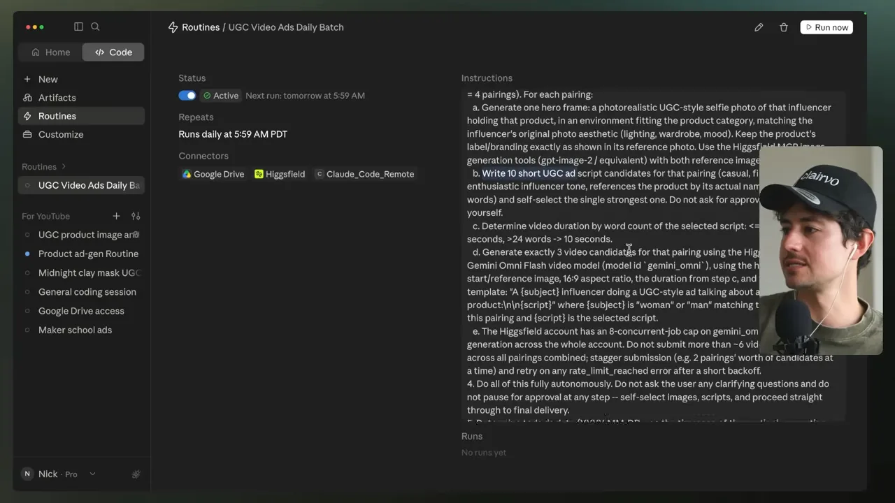
루틴 자체는 매일 몇 센트로 돌아가요. 비용의 대부분은 Higgsfield 크레딧이지만, 제작사에 인플루언서 섭외를 맡기는 것보다는 훨씬 싸다는 게 발표자의 계산이에요. 첫 실습을 길게 보여 준 이유도 여기 있어요. 프롬프트에서 루틴까지 한 번 끝까지 봤으니, 이후 실습은 더 빨리 진행해요.
퍼지 변수로 쓰는 뉴스레터와 콜드 이메일
두 번째 손잡이는 카피예요. 목표는 직접 쓰지 않은 글이 직접 쓴 것처럼 읽히게 하는 거예요. 발표자는 두 가지 경우로 나눠요. 이미 내 고객인 사람에게 보내는 뉴스레터는 우리가 가진 데이터(구매, 행동, 통화 메모)로 개인화해요. 모르는 사람에게 보내는 콜드 아웃리치는 LinkedIn Sales Navigator 같은 곳에서 긁은 공개 데이터로 개인화해요.
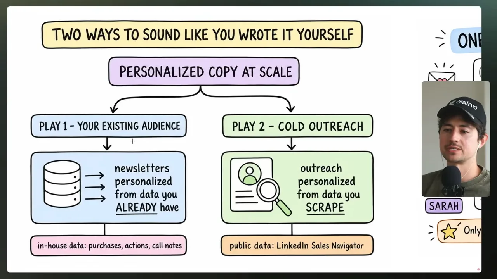
하드 변수와 퍼지 변수
보통 메일 병합은 이름, 회사, 도시 같은 칸을 그대로 꽂아요. 발표자는 이걸 하드 변수라고 불러요. 사람 손으로 개인화 메일을 대량으로 쓰기 어려워서 생긴 타협이에요. 이제는 이 칸들을 AI에 통과시켜, "회사가 왜 흥미로운지", "최근 글에 대한 진심 어린 칭찬" 같은 문장 조각으로 바꿀 수 있어요. 이게 퍼지 변수예요.
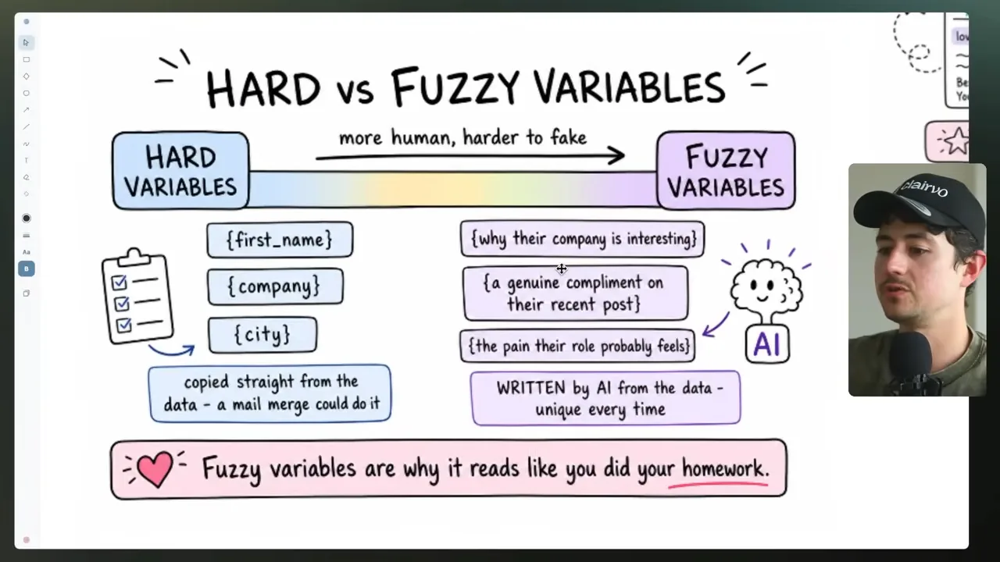
뉴스레터: Maker School 환영 메일
실습 대상은 발표자가 Kit로 운영하는 메일 목록이에요. 약 6개월 동안 3만 8천여 명이 모였고, 주로 Instagram 댓글에 자동으로 다이렉트 메시지를 보내 자료를 주고 이메일을 받는 방식으로 늘렸대요. 가입하면 Maker School 환영 메일이 가는데, 누구에게나 똑같은 내용이었어요.
그래서 템플릿부터 고쳤어요. 인사에 이름을 넣고, AI 티가 나는 줄표를 지우고, 문장 세 군데에 퍼지 변수를 끼웠어요. 변수 이름은 낙타 표기법으로 길고 구체적으로 지어요. 이름 자체가 AI에게 주는 지시가 되거든요.
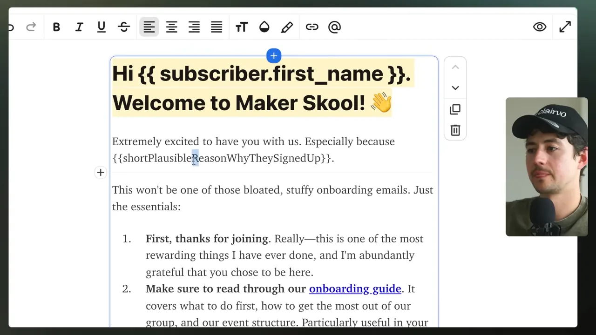
세 변수는 shortPlausibleReasonWhyTheySignedUp(가입했을 법한 짧은 이유), shortCustomReasonWhyItsUseful(온보딩 안내가 이 사람에게 쓸모 있는 이유), paraphrasedChallenge(가장 큰 고민을 바꿔 쓴 말)예요. 시험용 Google Sheet에는 이름, 회사, 직함, 도시, 취미, 가입 이유, 즐겨 쓰는 도구, 가장 큰 고민 같은 가짜 데이터 100행이 있어요.
Claude에게 준 프롬프트에서 발표자가 짚은 부분은 이래요.
- 모든 행을 끝까지 읽고, 표본만 보거나 짐작하지 말 것
- 행마다 그 사람의 다른 칸까지 참고해 따로 쓸 것. 같은 고민을 적은 두 사람도 문장이 달라야 함
- 문장 구조와 단어를 바꿔 가며, 몇 가지 틀에 빠지지 말 것
- 원본 시트는 건드리지 말고 새 시트를 Drive로 올릴 것
첫 결과는 너무 길었어요. "Marcus의 가장 큰 고민은…"처럼 이름이 들어가서 문장에 끼우면 말이 안 되는 것도 있었어요. 그래서 가입 이유와 쓸모는 10단어 안팎, 고민은 5단어 안팎으로 줄이고, 실제로 끼워질 문장을 함께 보여 줬어요. 다시 나온 결과는 "you're pushing North Partners past 20K a month"처럼 짧고 자연스러웠어요. 발표자는 메일 전체에서 AI가 쓴 단어의 비율이 낮을수록 "AI가 썼나?" 하는 의심도 줄어든다고 설명해요.
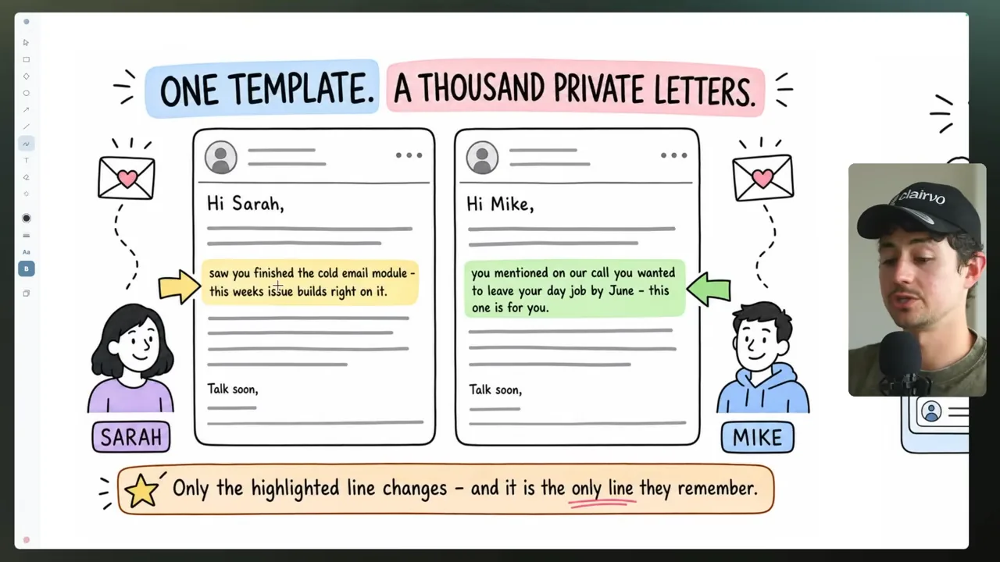
Kit에 결과를 올리려면 사용자 정의 필드를 먼저 만들어야 했어요. 미리 보기에서 변수가 비어 나오자 Kit의 변수 문법(subscriber. 뒤에 소문자 이름)이 다르다는 걸 찾아 고쳤어요. 두 사람으로 미리 보기를 확인하니 "Hey Marcus, welcome to Maker School. Extremely excited to have you with us, especially because you're pushing North Partners past 20K a month with automation." 같은 문장이 나왔어요.
발표자는 여기서 원칙 하나를 강조해요. 끝에서 시작하라는 거예요. 결과물을 먼저 손으로 만들어 확인하고, 그다음에 거꾸로 시스템을 짜요. 원하는 결과가 안 나오는 과정을 자동화하면 형편없는 과정을 빨리 돌릴 뿐이에요.
Kit API로 매일 돌리기
스킬은 Google Sheet 대신 Kit API를 직접 부르게 했어요. Claude가 API 문서를 조사해서 내놓은 방법은 태그를 이용해 그날 새 구독자에게만 환영 방송을 보내는 거예요.
flowchart LR A["어제 이후 새 구독자 조회"] --> B["사람마다 퍼지 변수 3개 생성"] B --> C["Kit 사용자 정의 필드에 저장"] C --> D["welcome-pending 태그 붙이기"] D --> E["태그로 걸러 환영 방송 발송"] E --> F["태그 떼기"]
Kit에도 MCP가 있지만 필요한 기능이 없어서 API 키를 썼어요. Local 환경 변수에 KIT_API_KEY를 넣었는데, 원래 대화에서는 인식하지 못했어요. 환경 변수는 새 대화를 열어야 들어오기 때문이에요. 발표자는 새 대화를 열어 키가 되는지 확인한 뒤, 이전 대화 내용을 통째로 붙여 넣어 이어 갔어요.
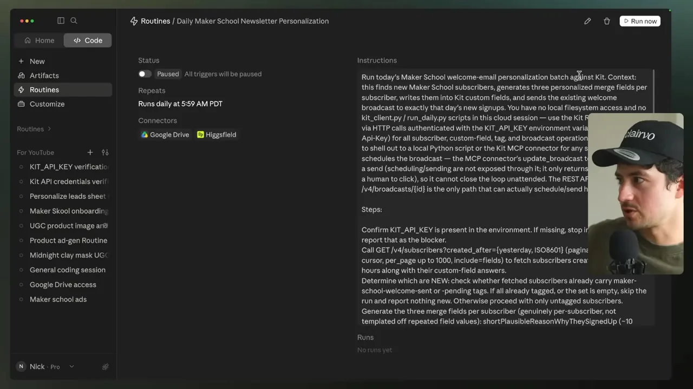
목록에 가짜 주소를 섞어 시험했기 때문에 실제 발송은 하지 않았어요. 없는 주소로 대량 발송하면 발신 평판(deliverability)이 떨어지기 때문이에요.
콜드 이메일: 데이터만 바꿔 같은 방법으로
콜드 아웃리치는 나를 모르는 사람에게 보내는 메일이에요. 발표자는 방문 영업, 전화, 콜드 메일과 메시지를 거치며 개인화가 답장률을 가르는 가장 큰 변수라는 걸 배웠대요. 템플릿 그대로 보내면 100명 중 1~2명이 답했고, "지난 영상 잘 봤어요" 한마디를 넣으면 5% 정도가 답했어요. 같은 비용으로 매출이 두 배 넘게 느는 셈이에요.
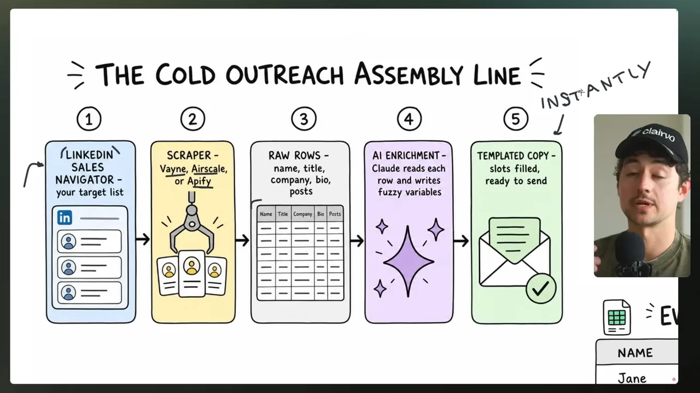
치과 대표가 위생사 채용 글을 올렸다면 "위생사 채용 글 잘 봤어요", 지붕 공사 업체가 두 번째 팀을 꾸렸다면 "두 번째 팀 축하해요"로 시작하는 식이에요. 발표자의 최고 기록은 같은 콘퍼런스에 가는 사람들에게 이런 방식으로 보낸 메일인데, 긍정 답장률이 20%를 넘었대요. 2~4%짜리 캠페인으로도 수십만 달러를 벌었다고 해요.
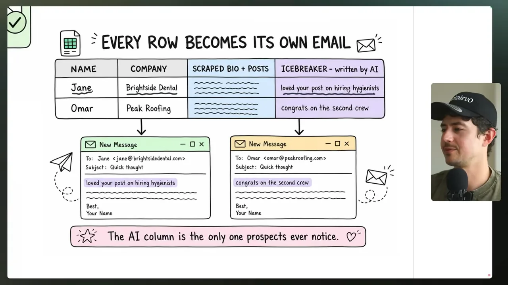
리드는 Apify의 Leads Finder 같은 스크레이퍼로 모아요. 직함, 직급, 이메일 상태, 전화번호 유무 같은 조건을 걸고, 1,000명당 1.5~1.8달러 정도를 내요. 결과 표에는 연 매출, 회사 설명, 업종, 전문 분야, 위치, 쓰는 기술까지 들어 있어요.
발표자가 즉석에서 쓴 템플릿은 일부러 소문자와 구어체예요. 요즘 사람들은 문법이 완벽하고 줄표가 많은 메일을 AI 스팸으로 보고 넘기기 때문에, 조금 엉성한 쪽이 사람처럼 읽힌대요.
리드 다섯 명으로 시험하자 Claude가 먼저 경고했어요. 템플릿에 든 실적 숫자가 사실이 아니면 기만적 주장이 될 수 있고, 발신 계정이 정지될 수도 있다고요. 발표자도 데모라서 넣은 숫자일 뿐, 실제로는 검증된 사례가 있어야 한다고 답해요. 결과 문장은 "saw you're running performance marketing out of Tampa"처럼 자연스러웠고, 마지막 변수는 업체마다 "중국에 진출하려는 서구 브랜드", "PPC 관리를 자동화하려는 에이전시"처럼 달라졌어요.
리드 수집부터 스킬에 넣기
시험이 잘 되자 시트 전체를 채우는 스킬로 만들었어요. 입력은 리드 목록, 출력은 퍼지 변수 네 칸이 붙은 목록이에요. 칸이 너무 많아 업로드가 번거로워서, 이름·이메일·회사·규모 같은 필요한 칸만 남기게도 했어요.
발표자는 한 걸음 더 나가 리드 수집까지 스킬에 넣었어요. Apify의 MCP 설정 URL을 커스텀 커넥터로 붙이고, 자기가 평소 하는 방식을 그대로 설명했어요. 조건을 걸어 목록을 긁고, 일부를 뽑아 이상적인 고객(ICP(Ideal Customer Profile))인지 보고, 기준에 못 미치면 조건을 고쳐 다시 긁는 거예요. 기준은 100명을 긁어 20명을 뽑았을 때 15명 이상이 ICP에 맞는 것이에요.
완성된 목록은 콜드 메일 도구 Instantly에 넣었어요. 캠페인 미리 보기에서 리드를 바꿔 가며 문장이 제대로 들어가는지 확인했어요. 템플릿에 "too"가 두 번 들어간 실수도 여기서 찾았어요. "one-track mind of clients, not just clicks"처럼 AI 티가 나는 문장도 하나 섞였는데, 발표자는 이걸 완전히 피할 수는 없다고 말해요.
이 스킬은 루프로 만들지 않았어요. 매일 새 캠페인을 여는 게 아니라 필요할 때 돌리면 충분하니까요. 발표자는 이것도 병목 사고라고 말해요. 루틴은 "무엇이든 루틴이 된다"는 걸 보이려고 오전 5시 59분짜리 Daily Clairvo Lead Gen을 만들어 두기만 했어요.
스피드 투 리드: 30초 안에 연락하기
이제 퍼널 가운데로 내려와요. 회사는 광고와 리드 목록에 큰돈을 쓰지만, 들어온 리드를 제대로 대하지 않아 돈의 일부만 돌려받아요. 발표자는 리드를 "돈으로 바꿀 수 있는 화폐"로 보라고 해요. 문제는 환율이에요. 리드에 월 1만 달러를 써서 2만 달러를 번다면 ROAS 2배인데, 버는 돈의 절반을 고객 획득에 쓰는 셈이에요.
환율을 올리는 방법은 단순해요. 더 빨리, 더 자주, 더 개인적으로 연락하는 거예요. 발표자가 실무에서 쓰는 방법은 이래요. 문의 몇 초 안에 전화를 걸고, 안 받으면 결과(disposition)에 따라 다음 연락 경로를 정하고, 음성 메시지를 남기고, 스팸으로 안 보이는 번호로 걸어요. 앞에서 말한 월 300만 달러에서 900만 달러가 된 홈서비스 회사가 이 방식의 결과래요.
리드는 상하는 물건이에요
문의 뒤 평균 10분을 기다리게 하던 회사가 30초 안에 연락하게 되면, 상대는 아직 문의를 넣던 그 마음 그대로예요. 충동적으로 폼을 채웠다가 금방 잊는 일은 누구에게나 있잖아요.
발표자가 예전 룸메이트 이야기를 해요. 웨딩 촬영 일을 하던 그는 홈페이지에 "폼을 남기면 60초 안에 전화드려요"라고 써 두고, 문자 → 이메일 → 전화를 연달아 보냈대요. 그 달 2만 달러 넘게 벌었고, 발표자는 벽 너머로 그걸 들으며 쌀과 콩으로 버텼다고 해요.
데모: 에어컨 설치 문의 폼
스피드 투 리드가 가장 잘 먹히는 곳은 홈서비스처럼 지루해 보이는 업종이래요. 발표자는 가상의 에어컨 설치 업체 문의 폼을 아티팩트로 만들게 했어요. 브라우저 페이지는 혼자서 메일을 보낼 수 없어서, 무료 서비스 Formspree에 폼을 연결해 제출하면 발표자 메일함으로 문의가 오게 했어요.
"더 알려 주실 것" 칸은 필수로 바꿨어요. 거기 적힌 말을 AI가 읽고 답장에 녹여야 하니까요. 만들 흐름은 슬라이드 한 장에 다 있어요. 0분에 문의가 들어오고, 1분에 개인화한 이메일, 2분에 문자, 5분에 이미 예고된 전화가 가요.
같은 맥락에서 예약률 이야기를 다시 꺼내요. 신청서에는 이름·이메일·웹사이트 같은 세 가지만 묻고, 나머지는 Claude가 회사 규모·업종·쓰는 기술·최근 소식을 조사해 채우면 돼요.
메일함 확인과 답장 문구
메일함을 읽는 건 Gmail 커넥터로 했어요. Claude가 처음에 다른 길을 헤매서 멈추고 "커넥터를 붙였으니 그걸 봐"라고 알려 줬어요. Claude는 문의 메일을 찾아 본문 형식을 파싱하고, 1분마다 새 문의가 있는지 확인하는 스케줄러를 만들었어요. 이미 답한 문의는 다시 처리하지 않게 했어요.
답장 문구는 발표자가 직접 썼어요. 제목은 답장처럼 보이게 "Re: 이름, air conditioning"으로 하고, 요청을 바꿔 쓴 퍼지 변수 하나만 넣었어요. 전화는 가상의 직원 Jonah가 거는 것으로 했어요.
문자는 한 통에 160자 제한이 있어서 더 짧게 썼어요. 처음 쓴 문장이 176자라 줄였고, 이름이 아주 긴 사람과 AI가 채울 변수 길이까지 감안해 여유를 남겼어요.
문자 보내기: Quo 커넥터
문자는 Quo(옛 이름 OpenPhone)로 보냈어요. 미국 사업자와 은행 계좌가 있어야 쓸 수 있는 서비스예요. Twilio를 쓰면 A2P(Application-to-Person) 등록을 거쳐야 해서 며칠에서 2주까지 기다려야 하고, 거절될 수도 있대요. 스팸 문자가 늘자 미국에서 생긴 절차라고 설명해요. 어느 서비스든 API 키나 커넥터를 Claude에게 주는 원리는 같아요.
Quo는 Claude 커넥터 목록에 공식으로 있어서 검색해 연결만 하면 됐어요. 시험 문의 "Dana Whitfield"가 "위층 침실이 온도를 어떻게 맞춰도 시원해지지 않아요, 기기는 12년쯤 됐어요"라고 적자, 메일과 문자가 거의 동시에 갔어요. 메일에는 "I hear the AC at your house needs a look."이 들어갔어요.
발표자는 너무 빠른 것도 문제라고 짚어요. 5초 만에 오면 가짜 같아서, 30초쯤 두거나 "지금 차고에 들어가는 중인데 3분만 주세요" 같은 사람다운 핑계나 작은 오타를 넣기도 한대요.
폴링 대신 API로 깨우는 루틴
로컬에서는 1분마다 메일함을 확인했지만, 루틴은 다르게 만들었어요. 루틴은 API 호출로 실행할 수 있어서, 폼이 제출될 때만 루틴을 깨우면 돼요. 쉬지 않고 확인하는 것보다 훨씬 효율적이에요. 이 방식은 내 컴퓨터에서 도는 루프로는 할 수 없어요.
만들 때 Drive와 Higgsfield 커넥터는 빼고 Gmail과 Quo만 남겼어요. 저장하면 POST 요청용 토큰이 나오고, 이걸 Claude에게 주면 연결을 마무리해요. 시험 리드 Priya에게는 "I hear upstairs is stuck at 80 even with the AC running." 메일과 문자가 바로 갔어요.
여기에 전화 연결(call merge)을 더하면 완성이에요. 제3의 번호가 영업 담당과 문의자에게 동시에 전화를 걸고, 먼저 받은 쪽부터 통화가 이어져요. 그다음 통화 결과를 분류하고 CRM(Customer Relationship Management)에 넣어 후속 전화를 잡는 건 영업 쪽 일이라, 발표자는 다음 강의로 미뤄요.
흩어진 데이터를 대시보드 하나로
다음은 데이터 수집과 추적이에요. 대시보드의 목적은 마케팅 데이터를 보이게 하는 거예요. 발표자는 먼저 흔한 실패작을 보여 줘요. 데이터를 Claude에 넣고 "시각화해 줘"라고 한 번에 시킨 결과예요.
요즘 대시보드는 결국 HTML이에요. 그러니 잘 만든 웹사이트를 만든다는 자세로 접근해야 훨씬 멀리 간다는 거예요.
데이터는 이미 있어요, 흩어져 있을 뿐
Meta 광고의 지출과 클릭, GA4(Google Analytics 4)의 트래픽, Stripe의 매출, CRM의 거래와 통화, 이메일 플랫폼의 열람과 답장. 필요한 데이터는 대부분 이미 있어요. 문제는 다섯 군데에 흩어져 있다는 거예요. 커넥터로 각 플랫폼에 붙고, 매일·매주·매달 데이터를 모아 오는 수집 파이프라인을 만들면 하나의 기준 데이터가 생겨요.
발표자가 마케팅 에이전시를 할 때는 한 달에 한 번 '보고서의 날'이 있었대요. 플랫폼마다 로그인해 숫자를 복사해 슬라이드에 붙이고, 고객이 투자 효과를 느끼게 예쁘게 꾸몄어요. 보고서는 사실상 영업 도구였는데, 만드는 게 엄청난 고역이었다고 해요.
발표자는 여기에 AI 비서를 붙이는 아이디어도 말해요. 고객이 대시보드에서 직접 질문하면 AI가 데이터를 분석해 답하는 식이에요. "대시보드는 보여 주고, 분석가는 말해 준다"는 슬라이드 문구처럼, 숫자 옆에 해석 한 줄이 붙는 게 목표예요.
뼈대는 가장 똑똑한 모델로
실제 고객 데이터는 공개할 수 없어서, 가상 에이전시의 데이터를 CSV(Comma-Separated Values) 파일 여러 개로 준비했어요. 영업 담당의 활동 기록 수만 행, GA4 세션 데이터 1만 행 이상 같은 것들이에요. 발표자는 Claude에게 파일들을 어떻게 묶을 수 있는지 보고 페이지 구조 후보를 몇 개 내 달라고 했어요.
그동안 강의는 대부분 Sonnet 5로 했는데, 여기서 모델 이야기를 해요. 디자인처럼 요구가 높아질수록 더 똑똑한 모델이 필요하다는 거예요. Opus 5에게 먼저 물어 퍼널 순서, 고객사 중심, 질문 중심의 세 후보를 받았어요. 그다음 Pro 요금제에 사용량 크레딧 20달러를 사서 Fable 5를 high로 켜고, 같은 문제를 "덜 똑똑한 모델이 한 분석"이라며 다시 보게 했어요.
Fable 5는 취향이 아니라 데이터 구조가 답을 정한다고 했어요. 데이터에 심어 둔 이상 징후 7개 중 5개가 특정 고객사에 몰려 있어서, 퍼널 순서로 페이지를 나누면 한 고객사의 이야기가 다섯 페이지에 흩어진다는 거예요. 그래서 고객사 중심 구조를 골랐고, 발표자도 받아들였어요. 물론 이 모델도 실수를 많이 하니, 마음에 안 들면 그대로 따를 필요는 없다고 덧붙여요.
Fable 5가 만든 뼈대에는 이상 징후를 찾는 Signals 페이지가 있어요. 10번 고객사는 평소 주당 57건이던 리드가 2026년 3월 9일 주에 3건으로 떨어졌고, 어떤 영업 담당은 승률이 팀 평균 24.2%보다 낮은 15.6%였어요. 이 뼈대 하나에 18캐나다달러(약 12~13달러)를 썼어요. 고객사 20곳 안팎과 수만 행의 데이터를 다루는 가벼운 작업이 아니니 그럴 만하다는 판단이에요.
발표자의 원칙은 "데이터를 먼저 화면에 올리고, 그다음 겉모습을 입혀 여러 안 중에 고른다"예요.
서브 에이전트 다섯으로 디자인 다섯 벌
뼈대가 생기자 모델을 Opus 5로 바꾸고, 서브 에이전트 다섯 개를 동시에 띄워 서로 아주 다른 디자인을 만들게 했어요. 기준은 읽기 쉬움과 실제 쓸모예요. 발표자는 여기서 병렬 처리를 화이트보드로 설명해요.
병렬로 돌릴 수 있는 일은 여러 에이전트가 같은 데이터를 쓰되 서로의 행동이 서로에게 영향을 주지 않는 일이에요. 장점은 빠르고, 가능한 해답을 더 넓게 훑어볼 수 있다는 거예요. 단점은 사용량을 훨씬 많이 쓰고, 각 에이전트를 지켜보지 않으니 실패할 위험이 크다는 거예요. 하지만 디자인 다섯 벌 중 하나만 마음에 들면 되는 일이라 그 위험은 감수할 만해요.
다섯 개는 정확히 5분이 아니라 8분 안팎씩 걸렸어요. 도중에 5시간 사용 한도에도 거의 닿았어요. 결과는 같은 데이터를 완전히 다른 성격으로 보여 줬어요. 발표자가 좋아한 건 터미널 스타일과 dense ops예요.
연 매출 2~3천만 달러 규모의 한 회사는 이런 대시보드를 사무실 텔레비전에 띄워 두고, 하루 동안 지표가 채워지는 걸 담당자들이 계속 보게 한대요.
Netlify로 올리고 비밀번호 걸기
마지막으로 팀이 볼 수 있게 인터넷에 올렸어요. 정적 사이트를 거의 무료로 올리는 Netlify의 원격 MCP 서버를 커스텀 커넥터로 붙이고, "V3을 올리고 비밀번호를 걸어 줘"라고 말로 시켰어요. URL 매개변수로 고객사마다 다른 비밀번호를 거는 것도 쉽다고 해요.
발표자는 Agency Analytics 같은 마케팅 보고 소프트웨어를 토큰 15달러어치로 다시 만든 셈이라고 말해요. 데이터 수집 파이프라인까지 붙여도 30분 정도면 된다고요. 그는 자기 회사에서는 토큰을 사업 경비로 보고, 한 달에 1만 4~5천 달러를 쓴 적도 있대요. 그때는 Fable 5 서브 에이전트를 여럿 띄우고 2배쯤 빠른 fast mode까지 켠다고 해요. 강의에서는 보통 사람과 같은 조건을 보여 주려고 일부러 아껴 썼어요.
후속 연락을 매일 자동으로
마지막 실습은 퍼널 맨 아래, 후속 연락이에요. 스피드 투 리드가 사건이 일어날 때 움직였다면, 이번에는 정해 둔 일정에 맞춰 움직여요. 발표자는 이 영역이 영업과 겹친다고 인정하면서도, 투자 대비 효과가 아주 크다고 해요. 후속 연락만 탄탄히 해도 조직 매출이 20~30% 늘 수 있대요.
그는 앞의 스피드 투 리드와 묶어 계산해요. 리드 10명 중 통화까지 오는 사람이 3명에서 6명이 되면 2배, 계약하는 사람이 2명에서 3명이 되면 1.5배예요. 둘을 곱하면 3배예요.
월 25만 달러를 벌던 회사가 75만 달러가 되면 매달 50만 달러의 가치를 만든 거예요. 발표자는 이 중 10%만 보상으로 받아도 월 5만 달러라며, 자기가 돈을 버는 방식이 이렇다고 말해요.
후속 연락 기계의 구조
영업과 마케팅은 보통 CRM에서 일해요. 발표자는 실제 자기 CRM과 비슷한 청구서 수금용 목록을 ClickUp에 만들어 뒀어요. 회사 이름, 금액, 담당자, 청구서 보낸 날, 연체 일수, 마감일, 서비스 항목이 있는, 사실상 잘 꾸민 스프레드시트예요. 사람이 많아지면 누구에게 언제 연락할지 챙기기가 어려워져요.
AI가 매번 새로 쓰게 하지 않고 미리 만든 템플릿에서 고르게 하는 이유가 있어요. 내 말투에 가깝고, 큰 사고가 훨씬 적어요. 어떤 상황에 어떤 템플릿을 보낼지는 조건으로 정해요. 발표자가 예로 든 조건은 이래요.
| 상황 | 확인하는 것 | 보내는 것 |
|---|---|---|
| 제안서 뒤 조용해짐 | 7일 동안 답장이 없었나 | 짧은 확인 메일 |
| 질문을 무시함 | 우리가 물은 걸 답하지 않았나 | "더 설명드릴 게 있으면 알려 주세요" |
| 나중에 연락 달라고 함 | "다음 달에"라고 한 그 시점이 됐나 | 약속한 시점의 연락 |
| 관심 신호 | 지난 메일을 여러 번 열었나 | 한 번 더 미는 메일 |
끝에서 시작하기: 연결 확인과 발송 경로
ClickUp은 Claude 커넥터 목록에 있어서 한 번에 연결됐어요. 발표자는 버릇처럼 먼저 결과가 나오는지부터 확인해요. "연체 7일인 사람을 가져와 봐"라고 하자 세 명(Erica Doyle, Dr. Nina Patel, Marcus Behn)이 나왔어요. 시연이라 연락처 이메일은 전부 발표자 자신의 주소로 바꿔 뒀어요.
그런데 Gmail 커넥터로는 메일을 보낼 수 없었어요. Claude가 도구 목록을 확인해 보니 초안 만들기와 수정만 있고 발송 도구가 없었어요. 발표자는 "문제가 생기느냐가 아니라 언제 생기느냐"라고 말하며, Claude가 제시한 세 가지 방법 중 자기 OAuth 클라이언트로 Gmail API를 쓰는 방법을 골랐어요. Claude가 인증 스크립트를 쓰고, 발표자는 Google Cloud 콘솔 권한을 한 번 허락했어요. 메일 기록을 읽어야 해서 읽기 권한도 나중에 추가했어요.
템플릿 열 개와 연체 일수
템플릿은 한 줄짜리 부드러운 확인 메일 열 개로 만들었어요. 자동으로 계속 나가는 메일이니 세게 미는 것보다 친절한 쪽이 낫다는 판단이에요. 줄표를 모두 빼고, 청구서 번호는 넣지 말고, 끝은 "Thanks - Nick"으로 맺게 했어요.
보내는 시점은 연체 일수로 정했어요. 하루 한 번 ClickUp을 조회해서, 아래 날짜 중 하나에 해당하는 사람에게 템플릿을 채워 보내요. 보내기 전에는 그 사람과 주고받은 메일을 확인해 이미 보낸 템플릿은 건너뛰어요.
그만 보내 달라는 사람은 멈추기
상대가 그만 보내 달라고 했는데 계속 보내면 안 되겠죠. 그래서 받은 메일에 거절 문구가 있으면 ClickUp 작업에 표시하고 메일을 보내지 않게 했어요. Claude는 메모 칸과 '추심 단계' 칸을 찾아 둘 다 쓰기로 했어요.
처음에는 연체 7일인 세 명 중 한 명에게만 보냈어요. 발표자는 Claude가 토큰을 아끼려고 이런 선택을 자주 하는데 대체로 좋은 습관이라고 하면서도, 실제로 세 명 모두에게 돌리게 했어요. 이 작업까지 Opus 5로 5시간 한도의 44%를 썼어요.
SOP 스킬과 매일 아침 루틴
마지막으로 지금까지의 수정 사항을 모두 담아, 이 대화를 모르는 다른 Claude도 그대로 따라 할 수 있는 간단한 글머리표 SOP(Standard Operating Procedure)로 스킬을 정리하게 했어요. 그리고 매일 오전 5시 59분에 도는 루틴으로 올렸어요. ClickUp은 MCP 커넥터라 클라우드에서도 붙일 수 있고, 로컬 스크립트는 저장소로 옮겼어요.
더 좋게 만들 방법도 말해요. 사례 연구나 자료를 담은 메일, 인사이트 공유, 미팅 전후 연락, 고객 이야기, 가격 고민에 대한 부드러운 확인처럼 템플릿 종류를 늘리는 거예요. 정리하면서 문자도 보내 달라고 Quo 커넥터를 붙였는데, 실제로 쓰려면 다시 시험해야 한다고 덧붙여요. 버그는 늘 생기니까요.
유지보수, 그리고 자동화하지 말 것
실습이 끝나고, 발표자는 만든 시스템을 오래 굴리는 법과 큰 회사들과 일하며 배운 조언으로 강의를 마무리해요. 여기서는 남의 회사 시스템을 맡아 관리한다는 상황을 가정해요.
로그인과 인증은 처음에 다 받아 두기
첫 조언은 로그인과 인증 정보를 처음부터 받아 두라는 거예요. 발표자 경험으로는 유지보수 요청의 70% 정도가 여기서 나와요. 흔한 흐름은 화면의 세 줄 그대로예요.
보안만 보면 고객의 계정 정보를 갖지 않는 게 맞아요. 하지만 오래 가는 사업 인프라를 만들려면, 발표자는 핵심 계정 정보를 받아 두는 편이 훨씬 다루기 쉽다고 해요. 환경 변수에 서비스 아이디와 비밀번호를 넣어 두고, 지시문에 "인증 문제가 생기면 이 정보로 로그인해 해당 위치로 가서 API 키를 다시 만들라"는 한 줄을 넣어요. 요즘 모델은 브라우저를 쓸 수 있어서 이런 디버그 흐름을 스스로 해낼 수 있어요.
스스로 고치게 하기
인증 말고 다른 문제가 생기면, 모델에게 고치고 다시 돌릴 전권을 줘요. 발표자는 이걸 자가 치유라고 불러요. 쉽게 말해 AI 시스템이 자기 지시문을 고쳐 쓸 수 있게 허락하는 거예요.
발표자는 자기 문구가 완벽하지 않다며 그대로 쓰라고 하지는 않아요. 다만 뼈대는 이래요.
If at any point you run into the same error more than three times, odds are something has materially changed in the systems that you are interacting with. Evaluate these changes, explore, and see if you can solve the problem. You have full agency autonomy.
같은 오류가 세 번 넘게 나면, 연결된 시스템에서 뭔가 실질적으로 바뀌었을 가능성이 커요. 바뀐 점을 살펴보고 문제를 풀 수 있는지 찾아보세요. 전권을 줄게요.
— 영상 5:42:02
이어지는 부분은 고친 뒤 보고하고, 스킬이나 루프·루틴 지시문에 문제와 해결책을 담은 변경 기록을 덧붙이며 지시문 자체도 고치라는 내용이에요. 기록이 쌓이면 무슨 일이 왜 있었는지 늘 볼 수 있어요.
완벽하지는 않아요. 일시적인 요청 한도 같은 사소한 문제에 지시문을 근본적으로 바꿔 버려 일을 망친 적도 있대요. 그래도 일시적 오류에 그냥 포기하는 경우보다는 훨씬 드물다고 해요. 발표자는 바구니를 손으로 짜던 사람이 바구니 기계를 만들고 관리하는 쪽으로 올라가는 비유를 들어요. 그 기계가 스스로를 청소하고 고칠 손까지 가진 셈이라고요.
에러는 보는 곳에 남기기
Make.com이나 n8n 같은 끌어다 놓는 자동화 도구는 실행 기록과 오류를 그림 위에 보여 주고 알림까지 보내 줬어요. Claude로 만든 자동화에는 이런 표준 관찰 도구가 없어서, 지금은 오류가 계속 나는데 아무도 모르는 상황이 흔하대요.
방법은 간단해요. 오류 전용 채널(#errors)을 만들고 Slack 커넥터를 붙인 뒤, 지시문 끝에 "오류가 나면 #errors에 알려라"를 넣어요. 메시지는 "XYZ에서 오류, 이렇게 고치려고 했음, 성공(또는 실패)" 정도면 충분해요. 자가 치유와 함께 쓰면 무엇을 시도했는지까지 보여요.
Maker School 광고 루틴에 Slack 커넥터를 붙이고 일부러 오류를 내 보라고 하자, "Drive 업로드가 막혔다"는 알림이 채널에 왔어요. 루틴은 "지금 실행"으로 바로 돌려 볼 수 있고, 매번 먼저 실행되는 설정 스크립트도 넣을 수 있어요. 다만 로컬 세션보다 느리게 돌아요.
오전 5시 59분 루틴이 실패해도 알림이 오면, 담당자가 8시에 출근하기 전에 두 시간 남짓 고칠 시간이 생겨요. 알림이 없으면 출근한 사람이 발견한 뒤에야 고치기 시작해서 대여섯 시간이 밀릴 수 있어요.
효율보다 효과
마지막 조언은 2년 가까이 작은 회사부터 매출 수십억 달러 기업까지 AI 에이전트를 실제 운영에 넣어 보며 얻은 거예요. 많은 사람이 지연 시간 몇 밀리초, 비용 몇 퍼센트를 줄이는 데 매달리다가 매출을 보고 놀라요. 애초에 별 도움이 안 되는 과정을 자동화했기 때문이에요.
예로 든 건 한 사모펀드예요. 블루칼라 업체 대표들과 매주 한 시간쯤 통화하며 실사를 하고 관계를 쌓는 게 이 회사가 돈을 버는 유일한 길인데, 그걸 음성 에이전트로 바꾸고 싶다고 했대요. 발표자는 일주일에 한 시간을 아끼려고 사업의 핵심을 망가뜨리는 거래라고 봤어요. 그 자신도 영상 녹화나 큰 회사와의 영업 통화처럼 자기가 있어야 결과가 달라지는 일은 직접 해요.
짝을 맞춰 보면 기준이 보여요. 보고서는 자동화해도 되지만, 대시보드의 Signals 경고를 고객에게 자동으로 보내는 건 안 돼요. 나쁜 소식은 사람이 직접 만나서 전해야 해요. 광고 카피는 초안까지만 AI에 맡기고, 최종본은 사람이 골라 다듬어요. 일정 잡기도 "화요일이나 수요일 2시 괜찮으세요?"라고 묻는 사람의 방식이 달력 링크보다 존중받는 느낌을 줘요.
발표자는 자동화로 먹고사는 사람이지만, 사람들이 지나치게 자동화하는 걸 많이 봤다고 말해요. 자동화는 사람과 보낼 시간을 사 주는 도구여야지, 그 시간을 대신하면 안 된다는 게 6시간 강의의 마지막 말이에요.